開卷有益 ／
醫師 ／ 醫學（四）（包括小兒科、皮膚科、神經科、精神科等科目及其相關臨床實例與醫學倫理） ／ 105 年第 2 次105 年第 2 次醫師醫學（四）（包括小兒科、皮膚科、神經科、精神科等科目及其相關臨床實例與醫學倫理）試題與答案
這一頁是民國 105 年第 2 次醫師醫學（四）（包括小兒科、皮膚科、神經科、精神科等科目及其相關臨床實例與醫學倫理）的整份歷屆試題，共 80 題，題目與標準答案出自考選部「國家考試試題及測驗式試題答案」開放資料，其中 80 題附有詳解。以下逐題列出題幹、選項與答案；要計時作答或記錄成績，請用線上練習。
考選部原始場次代碼：105100
線上作答這一科 →
全部 80 題
第 1 題
住在新竹的5個月大男童，被媽媽被發現左側腋下有一個直徑約2公分的硬塊，後來硬塊愈來愈大，並且出現紅腫如圖所示，他被帶到診所接受第一代抗生素Keflex 40 mg/kg/day治療約一週，可是並未見到效果，但也沒有發燒，問診發現這位男童的預防注射均如期接種，並無旅遊史，下列那一項處置最正確？
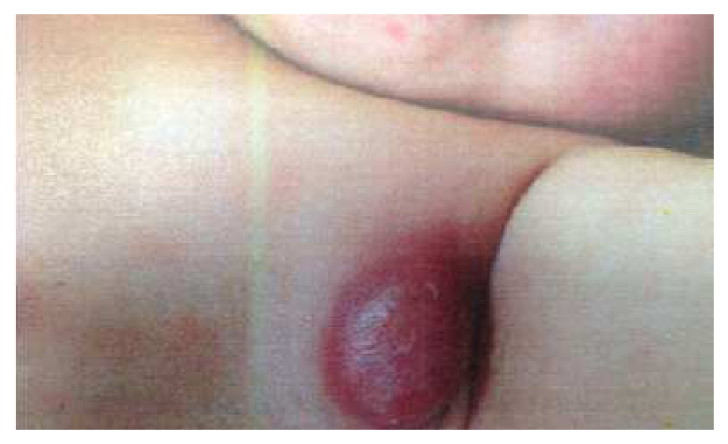
（A） 可能是抗生素劑量不夠，增加抗生素的劑量（B） 應該是接種卡介苗引起之淋巴腺炎，可用細針穿刺引流，將膿液作耐酸性染色和結核菌培養（C） 應該是血管瘤，不需要做特別處理，解釋病情並建議1歲大時追蹤即可（D） 可能為惡性腫瘤，應儘速安排電腦斷層檢查答案：（B）
詳解與考點 正解：5個月大嬰兒接種卡介苗後，出現同側左腋下逐漸增大的無發燒紅腫腫塊；圖中可見腋窩局部隆起、發紅且中央呈膿瘍樣變化，最符合卡介苗相關腋窩淋巴腺炎併化膿（BCG lymphadenitis with suppuration）。腋窩淋巴結是卡介苗接種部位的區域引流淋巴結；未對 cephalexin 反應也支持並非一般常見細菌性皮膚軟組織感染。對有波動感或明顯化膿的病灶，可細針穿刺引流以減少自發破裂及慢性竇道形成，並將膿液做耐酸性染色與分枝桿菌培養，故選 B。
A：cephalexin 對一般革蘭氏陽性菌感染可有效，但本例的年齡、同側腋窩位置、按時接種史、無全身發燒及抗生素治療無效，均較支持卡介苗相關淋巴腺炎。單純提高（A）cephalexin 劑量不能處理由 BCG 所致的化膿性淋巴結炎，反而延誤適當評估與引流。
C：血管瘤（hemangioma）通常是表淺紅色或深部藍紫色的血管性病灶，並非圖中這種腋窩局限性紅腫、中央膿瘍樣的硬塊；且本例病史具卡介苗後區域淋巴結腫大的典型線索，因此不能以（C）血管瘤觀察追蹤處理。
D：惡性腫瘤可造成持續性淋巴結腫大，但較不會呈現圖示的局部紅腫化膿外觀；本例也有明確的卡介苗接種與區域淋巴結分布線索。應先以（B）細針穿刺取得檢體並處理膿瘍，而非立刻以電腦斷層作為首要處置。
本題考點：卡介苗相關淋巴腺炎（BCG lymphadenitis）——常發生於接種側的腋窩或鎖骨上淋巴結；化膿性淋巴結炎（suppurative lymphadenitis）可採細針穿刺引流並送耐酸性染色與分枝桿菌培養；鑑別診斷須區分一般細菌感染、血管瘤與惡性淋巴結病變。
第 2 題
2歲男童，被發現右邊膝蓋處和屁股有成群的水泡已有2天如圖所示，看診時你發現這位男童的口腔黏膜也有0.2公分大小的水泡，媽媽主訴男童食慾變差也有發燒情況，下列那一項是最可能的診斷？
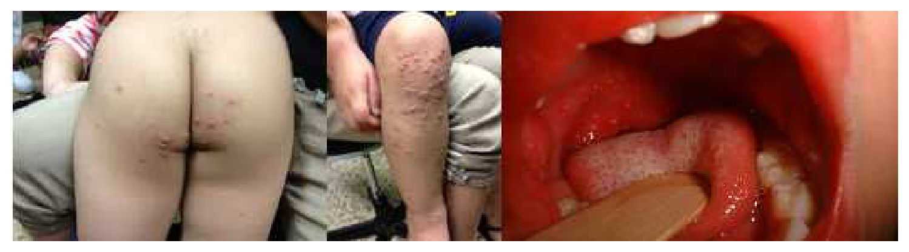
（A） 水痘（varicella）（B） 手足口症（hand foot mouth disease）（C） 天花（smallpox）（D） 麻疹（measles）答案：（B）
詳解與考點 正解：圖中可見臀部及膝部成群小水泡，合併口腔黏膜小水泡、發燒與食慾下降，符合手足口症（hand-foot-and-mouth disease）。此病常由腸病毒引起，除了典型手、足病灶，也可出現在臀部、膝部等四肢近端；口腔水泡破裂後會造成疼痛與進食減少，故選 B。
A：水痘（varicella）的皮疹常由軀幹、頭皮開始向外擴散，並可同時見到丘疹、水泡與結痂等不同階段病灶；本題圖示以臀部、膝部成群水泡合併口腔病灶為主，更符合手足口症的分布與表現。
C：天花（smallpox）病灶多為深在且較一致階段的膿疱，常有明顯全身症狀，且已被根除；其典型皮疹分布與本題幼童的口腔水泡、臀膝水泡組合不符。
D：麻疹（measles）典型表現為發燒、咳嗽、流鼻水、結膜炎及斑丘疹，口腔可有 Koplik spots，但不是成群水泡；麻疹皮疹也不是圖中所見的局部群聚性水泡。
本題考點：手足口症（hand-foot-and-mouth disease）——腸病毒感染可造成發燒、口腔疼痛性水泡或潰瘍，以及手、足、臀部或膝部的水泡疹；鑑別重點是水痘的多期皮疹、麻疹的斑丘疹與呼吸道前驅症狀、天花的深在且同階段膿疱。
第 3 題
1歲8 個月大的男童發燒、嘔吐和嗜睡3天住到病房，身體診察時發現皮膚出現出血點和紫斑現象如圖所示，血液檢查發現：血紅素為9.5gm/dL、血比容為28.5%、白血球為14000/mm3，以中性球占85%、其中不成熟白血球有20%、血小板為34000/mm3，發炎指數CRP: 20 mg/dL；詢問病史發現家中沒人有相同症狀且並無旅遊史，下列那一項是最可能的診斷？
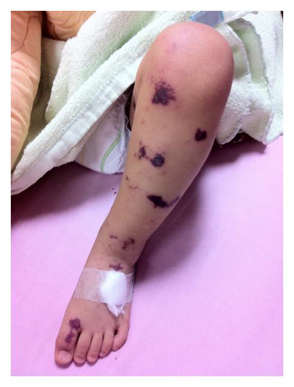
（A） 過敏性紫斑症（B） 特發性血小板低下紫斑症（C） 腦膜炎雙球菌感染（D） 多形性紅斑答案：（C）
詳解與考點 正解：患童有急性發燒、嘔吐、嗜睡，合併圖中可見下肢散在出血點與不規則紫斑；檢驗又見嗜中性球性白血球增多及左移、CRP 明顯升高、血小板嚴重下降，符合侵襲性細菌感染併敗血症與瀰漫性血管內凝血的表現。腦膜炎雙球菌（Neisseria meningitidis）可造成腦膜炎雙球菌血症，典型出現快速進展的瘀點、紫斑與意識狀態改變，故選 C。
A：過敏性紫斑症（IgA vasculitis）常為下肢與臀部可觸及性紫斑，並可合併腹痛、關節痛或腎臟侵犯；但通常血小板數正常，不能解釋本題嚴重血小板低下、嗜中性球左移與高 CRP 的敗血症型態。
B：特發性血小板低下紫斑症（immune thrombocytopenia, ITP）可因血小板低下造成瘀點與紫斑，看似可解釋皮膚表現；但多為相對健康兒童的孤立性血小板低下，通常不會有高燒、嗜睡、明顯發炎反應及不成熟嗜中性球增加，故不符。
D：多形性紅斑（erythema multiforme）的典型皮疹是靶形病灶，中央、較淡的中間環與外圈紅斑呈同心圓外觀；圖中則為出血性瘀點與紫斑，且本題全身感染與凝血異常的證據更支持腦膜炎雙球菌血症。
本題考點：腦膜炎雙球菌血症（meningococcemia）可表現為發燒、意識改變及瘀點或紫斑；瀰漫性血管內凝血（disseminated intravascular coagulation, DIC）會造成血小板消耗與出血性皮疹；兒童紫斑須以全身狀態、發炎指標及血小板數區分敗血症與免疫性或血管炎性疾病。
第 4 題
關於猩紅熱的敘述，下列何者錯誤？
（A） 為pyrogenic exotoxins引起（B） 感染後會出現脫皮的情形為A群鏈球菌引起（C） 治療首選藥物為紅黴素（D） 會呈現草莓舌、皮膚通紅答案：（C）
詳解與考點 正解：猩紅熱的治療首選。猩紅熱由 A 群鏈球菌感染所致，治療首選為青黴素類；紅黴素可用於對青黴素過敏者，並非一般情況下的首選，因此（C）錯誤，故選 C。
A：猩紅熱的皮疹與 A 群鏈球菌產生的致熱性外毒素（pyrogenic exotoxins）有關，敘述正確，故非答案。
B：感染後可在恢復期出現脫皮，且病原為 A 群鏈球菌，敘述正確。
D：草莓舌與瀰漫性發紅的細小丘疹性皮疹是猩紅熱的典型表現，故此敘述正確。
本題考點：猩紅熱（scarlet fever）由 A 群鏈球菌（group A Streptococcus）及其致熱性外毒素（pyrogenic exotoxins）引起；青黴素類（penicillins）為一般首選治療；紅黴素（erythromycin）是青黴素過敏時的替代選項。
第 5 題
17歲男生，因為最近2週內體重增加10公斤且出現水腫狀況而求診，身體診察時發現下肢有按壓性水腫，尿液檢查發現有嚴重蛋白尿(3+)、白血球：20/HPF，血液檢查發現白蛋白低下：1.6 g/dL、膽固醇上升：425 mg/dL和三酸甘油酯上升300 mg/dL，下列何者為最有可能的診斷？
（A） 腎病症候群（B） 急性腎炎（C） 泌尿道感染（D） 擴張性心肌病變答案：（A）
詳解與考點 正解：水腫、嚴重蛋白尿、低白蛋白血症與高血脂的四聯徵。此例尿蛋白 3＋、白蛋白 1.6 g/dL、膽固醇 425 mg/dL，且有按壓性水腫，符合腎病症候群，故選 A。
B：急性腎炎常見血尿、腎功能變化與高血壓等腎炎性表現；本例的重點是大量蛋白尿、低白蛋白與高脂血症，較符合腎病症候群。
C：尿中白血球增加可提示感染或發炎，但無法單獨解釋明顯水腫、重度蛋白尿、低白蛋白與高血脂，因此不是最可能診斷。
D：擴張性心肌病變可造成水腫，但不能合理解釋嚴重蛋白尿與低白蛋白血症；它看似能解釋水腫，卻無法串起本題的腎臟與血脂線索。
本題考點：腎病症候群（nephrotic syndrome）的核心為大量蛋白尿（heavy proteinuria）、低白蛋白血症（hypoalbuminemia）、水腫（edema）與高脂血症（hyperlipidemia）；須與腎炎症候群（nephritic syndrome）區分。
第 6 題
足月兒之生理性黃疸，黃疸數值尖峰通常於何時出現？
（A） 出生6小時內（B） 出生12小時內（C） 出生24小時內（D） 出生2～5天內答案：（D）
詳解與考點 正解：足月兒的「生理性」黃疸及其尖峰時間。足月新生兒的生理性黃疸通常在出生後第 2～5 天達尖峰，再逐漸下降，故選 D。
A：出生 6 小時內就出現黃疸並不符合典型生理性黃疸的時程，須考慮病理性原因。
B：出生 12 小時內出現黃疸同樣過早，不應直接視為生理性黃疸。
C：出生 24 小時內的黃疸仍屬過早警訊；它看似接近第 2 天，卻仍早於生理性黃疸的典型尖峰時間。
本題考點：新生兒生理性黃疸（physiologic neonatal jaundice）在足月兒通常於出生後第 2～5 天達尖峰；早發性黃疸（early-onset jaundice）須評估病理性黃疸（pathologic jaundice）的可能。
第 7 題
下列那一項對足月新生兒清醒時是不正常的？
（A） 心跳每分鐘72下（B） 呼吸每分鐘40次（C） 體溫37.5℃（D） 前囟門平坦答案：（A）
詳解與考點 正解：足月新生兒清醒時的正常生命徵象。清醒足月新生兒的心跳通常明顯快於每分鐘 72 下，因此（A）不正常，故選 A。
B：呼吸每分鐘 40 次在新生兒常見正常範圍內，故不是答案。
C：體溫 37.5℃可在新生兒可接受的正常範圍內，不能單憑此值判為異常。
D：前囟門平坦是正常所見；明顯凹陷才需考慮脫水，明顯膨隆則須評估顱內壓升高等情況。
本題考點：新生兒生命徵象（neonatal vital signs）中，清醒時心跳（heart rate）通常高於每分鐘 72 下；新生兒呼吸速率（respiratory rate）與前囟門（anterior fontanelle）評估可協助辨識生理與病理狀態。
第 8 題
由氣管給予肺表面張力素（surfactant）的治療效果，是依賴它能否迅速地和均勻地在肺泡中被吸附和傳播。下列那一狀況的肺表面張力素是最有效率的分布？
（A） 在使用呼吸器一段時間後（B） 出生時仍有胎兒肺液體時（C） 緩慢速率地注入（D） 以aerosol的方式給予答案：（B）
詳解與考點 正解：surfactant 須快速、均勻到達肺泡；出生時殘留的胎兒肺液可作為液體介質，幫助氣管內給藥在肺泡表面鋪展，故（B）分布最有效率，選 B。
A：呼吸器使用一段時間後肺內液體較少，且通氣相關損傷或蛋白滲出可能干擾 surfactant 功能，不利均勻分布。
C：緩慢注入容易讓藥液在近端氣道或局部肺區滯留較久，降低短時間內分散至各肺泡的效率。
D：aerosol 方式看似可藉氣流送藥，但霧化顆粒在嬰兒氣道的沉積與進入肺泡量不易一致，肺泡實際獲藥較不均勻。
本題考點：肺表面張力素替代治療（surfactant replacement therapy）——療效仰賴肺泡內的快速吸附與鋪展；胎兒肺液（fetal lung fluid）有助早期肺內液相分布。
第 9 題
6週大之嬰兒，媽媽主訴昨天開始發燒，活力變差，剛剛突然發生抽搐，持續5分鐘，住院醫師認為病嬰疑似感染腦膜炎，進行脊椎穿刺檢查，脊髓液呈現leukocytes: 5000/mm3，protein: 300 mg/dL，glucose: 20 mg/dL。最可能的診斷是？
（A） 細菌性腦膜炎（B） 病毒性腦膜炎（C） 嗜伊紅性腦膜炎（D） 真菌性腦膜炎答案：（A）
詳解與考點 正解：腦脊髓液白血球 5000/mm3、蛋白質 300 mg/dL 顯著升高且葡萄糖僅 20 mg/dL，是化膿性「高細胞數、高蛋白、低糖」型態，最符合細菌性腦膜炎（bacterial meningitis），故選 A。
B：病毒性腦膜炎也可發燒抽搐，但腦脊髓液多以淋巴球增多為主，葡萄糖通常正常，蛋白質上升也較輕。
C：嗜伊紅性腦膜炎須有腦脊髓液嗜伊紅性白血球增多的線索；題目未提供，不能由白血球總數高推論。
D：真菌性腦膜炎可低糖、高蛋白而看似相近，但常為較亞急性病程，細胞數通常不呈本題如此強烈的化膿性反應。
本題考點：腦脊髓液判讀（cerebrospinal fluid analysis）——細菌性腦膜炎典型為白血球顯著增加、蛋白質升高及葡萄糖下降；須與病毒性腦膜炎區分。
第 10 題
懷孕29週出生的早產兒，出生體重1600公克，餵食後罹患壞死性腸炎。下列症狀何者最少出現？
（A） 便秘（B） 腹脹（C） 嘔吐（D） 血便答案：（A）
詳解與考點 正解：早產兒在餵食後發生壞死性腸炎（necrotizing enterocolitis, NEC），常因腸壁發炎、腸麻痺與壞死出現腹脹、嘔吐及血便；便秘不是典型表現，因此最少出現的是 A。
B：腹脹反映腸蠕動下降與腸內氣體累積，是 NEC 的常見警訊。
C：嘔吐可由餵食不耐、胃排空延遲或腸阻塞樣表現引起，符合 NEC 的消化道症狀。
D：血便來自腸黏膜缺血、壞死與出血，是 NEC 的重要表現；它雖也見於其他腸病，但在高風險早產兒尤其需警覺 NEC。
本題考點：壞死性腸炎（necrotizing enterocolitis, NEC）——多見於早產兒，常在開始餵食後出現腹脹、餵食不耐、嘔吐與血便；核心病理為腸道缺血發炎與壞死。
第 11 題
6歲大男生，被發現肝功能異常，懷疑是Wilson disease， 下列何者錯誤？
（A） Wilson disease是性聯隱性遺傳（B） serum copper和ceruloplasmin 在Wilson disease早期不一定會低（C） 5歲以上找不到合理解釋的肝功能異常病人，Wilson disease應被列為鑑別診斷之一（D） 應會診眼科，看cornea 是否有Kayser-Fleischer (K-F) ring答案：（A）
詳解與考點 正解：本題問錯誤敘述。Wilson disease 是常染色體隱性遺傳（autosomal recessive inheritance），不是性聯隱性遺傳，故錯誤的是 A。兒童不明原因肝功能異常應考慮此銅代謝疾病。
B：早期個案的 serum copper 與 ceruloplasmin 不一定已呈典型降低，非典型檢驗不能單獨排除 Wilson disease，敘述正確。
C：5 歲以上若肝功能異常沒有合理解釋，Wilson disease 應列入鑑別診斷，因其可先以肝病表現。
D：Kayser-Fleischer ring 是角膜周邊銅沉積的線索，會診眼科進行裂隙燈檢查有助評估，敘述正確。
本題考點：威爾森氏症（Wilson disease）——為常染色體隱性銅代謝疾病，可有肝病、神經精神症狀與 Kayser-Fleischer ring；ceruloplasmin 不一定在早期即降低。
第 12 題
腸炎後腹瀉嬰兒，如果是腸粘膜受傷引發酵素缺乏，已給不含乳糖配方，仍然每天解多次酸性水性大便，下列那一種酵素缺乏最有可能？
（A） trehalase（B） sucrase-isomaltase（C） glucoamylase（D） maltase答案：（B）
詳解與考點 正解：腸炎後腸黏膜受傷、改用無乳糖配方仍有酸性水樣腹瀉，表示不只是 lactase 缺乏，而是其他刷狀緣雙醣酶也受損。sucrase-isomaltase 缺乏使蔗糖與部分澱粉產物吸收不良，未吸收醣類造成滲透性腹瀉，故選 B。
A：trehalase 主要分解 trehalose；一般嬰兒飲食中此醣類負荷有限，較不能解釋持續多次腹瀉。
C：glucoamylase 參與澱粉末端產物分解，但本題強調腸炎後的雙醣酶缺乏，以（B）最能對應持續的醣類吸收不良。
D：maltase 缺乏會影響麥芽糖分解，但其功能常與其他澱粉分解酶重疊，相較之下（B）較直接符合題意。
本題考點：繼發性雙醣酶缺乏（secondary disaccharidase deficiency）——腸黏膜受損使刷狀緣酶活性下降，造成滲透性腹瀉（osmotic diarrhea）與酸性糞便；限制乳糖無效時須思考其他雙醣酶。
第 13 題
有關腸套疊（intussusception）之敘述，下列何者正確？
（A） 女性的發生率約為男性的3倍（B） 典型的症狀是出現一陣一陣的腹痛（C） 迴腸-迴腸型（ileoileal）腸套疊最常發生（D） 鋇劑灌腸復位（barium enema reduction）後的復發率小於1%答案：（B）
詳解與考點 正解：腸套疊時腸段套入遠端腸腔，間歇性蠕動與腸繫膜牽拉會造成一陣一陣的腹痛，疼痛間歇兒童可暫時安靜，故正確的是 B。
A：腸套疊較常見於男童，並非女性發生率約為男性的 3 倍。
C：最常見的是迴盲部型（ileocolic intussusception），不是迴腸－迴腸型。
D：灌腸復位後仍有復發可能，不能說小於 1%；此選項看似把非手術復位的成功概念混入復發率，兩者並不相同。
本題考點：腸套疊（intussusception）——典型為陣發性腹痛，可伴嘔吐、血便與腹部腫塊；最常見為迴盲部型，灌腸可兼具診斷與復位作用。
第 14 題
12歲的男童幾天前有呼吸道感染，這兩天出現眼皮浮腫，陰囊水腫。尿液檢查顯示尿蛋白>300 mg/dL, RBC 3～5/HPF, 血中白蛋白1.7 gm/dL, 醫師給予類固醇治療8週之後，再次檢測尿蛋白仍是>300mg/dL反應，且血中肌酐酸值兩個月間增加了1.2mg/dL，下列何者最可能是男童的診斷？
（A） 微小變化型腎病變（minimal change nephropathy）（B） 局部巢狀腎絲球硬化（focal segmental glomerulosclerosis）（C） 腎絲球基底膜薄膜病（thin glomerular basement membrane disease）（D） IgA腎炎（IgA nephropathy）答案：（B）
詳解與考點 正解：腎病症候群表現經類固醇治療 8 週仍有大量蛋白尿，且肌酐酸值兩個月增加 1.2 mg/dL，代表類固醇抗性並有腎功能惡化。局部巢狀腎絲球硬化（focal segmental glomerulosclerosis, FSGS）最符合，故選 B。
A：微小變化型腎病變也常在兒童造成水腫，故看似合理；但多數對類固醇反應良好，與本題持續蛋白尿及腎功能惡化不符。
C：腎絲球基底膜薄膜病主要造成孤立性血尿，通常不會有重度低白蛋白血症、持續大量蛋白尿與快速腎功能惡化。
D：IgA 腎炎常見血尿，部分可有蛋白尿；但本題的腎病症候群、類固醇抗性及腎功能下降更支持 FSGS。
本題考點：局部巢狀腎絲球硬化（focal segmental glomerulosclerosis, FSGS）——可造成腎病症候群、類固醇抗性與進行性腎功能下降；須與通常對類固醇反應良好的微小變化型腎病變鑑別。
第 15 題
5歲男孩，有急性肢體無力麻痺（acute flaccid paralysis），最不可能的診斷或病因是：
（A） Bell's palsy（B） acute transverse myelitis（C） polio-like syndrome（D） hypokalemia答案：（A）
詳解與考點 正解：急性肢體無力麻痺（acute flaccid paralysis），其鑑別應是會影響四肢下運動神經元、脊髓或電解質的病因。Bell's palsy 是單側周邊性顏面神經麻痺，主要影響臉部而非肢體，因此最不可能為 A。
B：急性橫斷性脊髓炎（acute transverse myelitis）可急性造成肢體無力，臨床可在早期呈現低張力或弛緩性表現，須納入鑑別。
C：polio-like syndrome 可侵犯前角細胞，造成急性、不對稱的弛緩性肢體麻痺，符合此症候群範圍。
D：低血鉀（hypokalemia）可使骨骼肌興奮性下降，導致急性肌無力甚至週期性麻痺，故是重要可逆原因。
本題考點：急性弛緩性麻痺（acute flaccid paralysis）——須考慮前角細胞病變、脊髓炎、周邊神經肌肉病變與低血鉀；Bell's palsy 屬局部顏面神經病變。
第 16 題
2個月大的女嬰，因為最近一個月餵食越來越困難而住院，身體診察發現神智清楚，低肌肉張力，四肢無力，無深部肌腱反應，腹式呼吸以及舌頭顫動（fasciculation）。最可能的診斷是：
（A） 缺氧缺血性腦病變（hypoxic ischemic encephalopathy）（B） 脊髓肌肉萎縮症（spinal muscular atrophy）（C） 先天性重症肌無力（congenital myasthenia gravis）（D） 先天性肌肉失養症（congenital muscular dystrophy）答案：（B）
詳解與考點 正解：清醒嬰兒有低肌肉張力、對稱性四肢無力、深部肌腱反射消失、腹式呼吸及舌頭束顫（fasciculation），是前角細胞病變的典型組合，最符合脊髓肌肉萎縮症（spinal muscular atrophy, SMA），故選 B。
A：缺氧缺血性腦病變通常有周產期缺氧病史與腦部功能受損，不以清醒合併舌束顫及反射消失為典型。
C：先天性重症肌無力可造成餵食困難與肌無力，但深部肌腱反射通常保留，且舌束顫不符合神經肌肉接點病變。
D：先天性肌肉失養症可有低張力與無力，但舌束顫和反射消失更指向運動神經元受損，而非原發肌病。
本題考點：脊髓肌肉萎縮症（spinal muscular atrophy, SMA）——前角細胞退化造成嬰兒型低張力、對稱性無力、腱反射消失、舌束顫與呼吸肌無力；認知通常保留。
第 17 題
當嬰幼兒因為外傷被帶至急診時，下列照顧者的敘述何者最合理？
（A） 2個月的嬰兒自己翻身掉到床下撞到頭部（B） 4個月大的嬰兒腳卡到床欄，在自行掙脫的過程中讓大腿骨折（C） 5個月的嬰兒爬行時自己碰到熨斗而燙到手（D） 1歲2個月的嬰兒抓到餐桌的桌巾，讓桌上熱湯翻下燙傷臉部答案：（D）
詳解與考點 正解：判斷照顧者敘述是否合理，要用嬰幼兒當時應有的動作發展能力比對。1 歲 2 個月已能行走、抓拉物品，抓到桌巾使熱湯翻落燙傷臉部在發展上可成立，故選 D。
A：2 個月嬰兒尚未能自行穩定翻身，稱其自己翻身跌下床與該年齡動作能力不符。
B：4 個月嬰兒自行掙脫床欄而造成大腿骨折，所需力量與受傷機轉不相稱，應提高對不合理病史的警覺。
C：5 個月嬰兒通常尚未能有效爬行至熨斗處；燙傷本身雖可能意外發生，但所述動作發展不合理。
本題考點：非意外性傷害辨識（recognition of non-accidental injury）——傷害機轉必須與兒童的年齡、動作發展能力及傷勢相符；不相符的照顧者病史是重要警訊。
第 18 題
關於Noonan syndrome之敘述，下列何者錯誤？
（A） 身材矮小（B） 蹼狀頸（webbed neck）（C） 正常染色體核型（normal karyotype）（D） 主動脈狹窄（aortic stenosis）為其最常見的心臟病變答案：（D）
詳解與考點 正解：本題問錯誤敘述。Noonan syndrome 最常見的心臟病變是肺動脈瓣狹窄（pulmonary valve stenosis），不是主動脈狹窄，因此錯誤的是 D。
A：身材矮小是 Noonan syndrome 的常見表徵，敘述正確，故非答案。
B：蹼狀頸（webbed neck）是其典型外觀特徵之一，與胸廓及臉部特徵可一同出現。
C：Noonan syndrome 雖有類似 Turner syndrome 的部分外觀，但染色體核型通常正常；此點正是兩者常用的鑑別線索。
本題考點：努南症候群（Noonan syndrome）——常見矮小、蹼狀頸與正常核型；重要心臟病變為肺動脈瓣狹窄（pulmonary valve stenosis）及肥厚性心肌病變。
第 19 題
關於低血磷佝僂症（hypophosphatemic rickets）之敘述，下列何者較罕見？
（A） 血鈣正常（B） 血清鹼性磷酸酶（alkaline phosphatase）值高於正常（C） 血清副甲狀腺素（parathyroid hormone）濃度高於正常（D） 血清1,25-二羥維生素D（1,25-dihydroxyvitamin D）值正常答案：（C）
詳解與考點 正解：低血磷佝僂症的核心是腎臟磷酸鹽流失，血鈣通常正常、鹼性磷酸酶常升高，而 1,25-二羥維生素 D 對低血磷而言常呈不適當的正常或偏低。副甲狀腺素濃度升高不是典型主軸，因此較罕見的是 C。
A：血鈣正常符合低血磷佝僂症，因主要異常是磷酸鹽恆定而非初發性低血鈣。
B：骨礦化障礙會增加成骨細胞活性，血清鹼性磷酸酶常高於正常，敘述符合。
D：在低血磷刺激下，1,25-二羥維生素 D 理應上升；其正常值已屬相對不足，是此病常見的調控異常。
本題考點：低血磷佝僂症（hypophosphatemic rickets）——以腎性磷酸鹽流失與骨礦化不良為核心；常見正常血鈣、升高鹼性磷酸酶及不適當正常的 1,25-二羥維生素 D。
第 20 題
6歲女童，2個月前有發燒、倦怠感和體重減輕的症狀，後來發生肌肉無力且有Gower徵候（Gower sign），眼瞼出現紅斑且因日曬有惡化現象，血液檢查時發現肌酐酸激酶（creatine kinase）值明顯升高，最有可能的診斷是下列那一種疾病？
（A） 肌肉失養症（muscular dystrophy）（B） 感染性肌炎（infectious myositis）（C） 幼年型皮肌炎（juvenile dermatomyositis）（D） 全身性紅斑性狼瘡（systemic lupus erythematosus）答案：（C）
詳解與考點 正解：近端肌無力與 Gower 徵候表示肌病，眼瞼紅斑且日曬惡化提示特徵性皮疹，合併 creatine kinase 明顯升高，最符合幼年型皮肌炎（juvenile dermatomyositis），故選 C。
A：肌肉失養症可造成漸進性無力和 Gower 徵候，看似是強誘答；但不能解釋日曬加劇的眼瞼紅斑及發炎性全身症狀。
B：感染性肌炎多為急性局部肌肉疼痛、壓痛或感染徵象，通常不呈現典型光敏感皮疹與兩個月的近端肌無力。
D：全身性紅斑性狼瘡可有光敏感皮膚表現，但題目以近端肌無力、Gower 徵候與明顯肌酸激酶升高為主，較支持皮肌炎。
本題考點：幼年型皮肌炎（juvenile dermatomyositis）——為發炎性肌病（inflammatory myopathy），特徵為對稱近端肌無力、肌肉酵素升高及日曬相關皮疹，如眼瞼紫紅疹（heliotrope rash）。
第 21 題
小威的媽媽問醫生小威的氣喘病那時候才會好，醫生回答氣喘病是呼吸道組織持續的發炎反應，臨床不一定會有明顯症狀，但組織的發炎反應可能持續幾天甚至好幾年。下列何者不是造成慢性持續發炎的原因？
（A） 反覆的過敏原接觸刺激過敏反應細胞如肥大細胞（mast cell），嗜伊紅性細胞（eosinophil）產生反應（B） 第二型輔助T細胞（Th2）分泌細胞素如介白質-13（interleukin-13, IL-13），IL-5等而使上述的過敏反應細胞存活更久（C） 介白質-5（IL-5）會誘使肥大細胞（mast cell）前驅物分化，而使肥大細胞增生，進而破壞局部組織（D） 組織的重模組化（remodeling）造成氣管不可逆的組織變化而使疾病成慢性且持續答案：（C）
詳解與考點 正解：本題問不是造成慢性氣喘發炎的原因。IL-5 的主要作用是促進嗜伊紅性球的生成、活化與存活，並非誘使肥大細胞前驅物分化增生；因此 C 的細胞激素－細胞配對錯誤。
A：反覆接觸過敏原可活化肥大細胞與嗜伊紅性球，持續驅動過敏性氣道發炎，敘述正確。
B：Th2 細胞分泌 IL-5、IL-13 等細胞激素，可維持嗜伊紅性發炎與黏液、氣道反應性改變，故是慢性發炎的重要機制。
D：氣道重塑（airway remodeling）造成結構性改變與部分不可逆氣流受限，使疾病持續化，敘述正確。
本題考點：氣喘慢性發炎（chronic airway inflammation in asthma）——Th2 反應、嗜伊紅性球與反覆過敏原暴露共同維持發炎；IL-5 主要關聯嗜伊紅性球，氣道重塑（airway remodeling）造成長期結構改變。
第 22 題
8歲的小明，主述2天以來有肚子痛及左踝關節疼痛腫脹，身體檢查時發現下肢有許多紫斑（purpura），下列敘述何者錯誤？
（A） 25～50%的此類病人會影響腎臟（B） 血液中之血小板數目正常（C） 若有嚴重腸胃症狀如出血或阻塞，可使用類固醇治療（D） 急性期有尿液檢查異常者，建議尿液檢查追蹤2個月即可答案：（D）
詳解與考點 正解：腹痛、踝關節炎與下肢紫斑是 IgA 血管炎（IgA vasculitis）的典型組合。本題問錯誤敘述；已有急性期尿液異常者仍可能延後出現或持續腎臟侵犯，只追蹤尿液 2 個月不足，故 D 錯誤。
A：約有一部分 IgA 血管炎病人出現血尿或蛋白尿等腎臟侵犯，25～50% 的說法可作為概略描述，故非答案。
B：此病的紫斑是非血小板低下性紫斑，血小板數目通常正常；這是與免疫性血小板低下症的重要區別。
C：若嚴重腸胃道症狀如出血或阻塞，類固醇可用於控制發炎與症狀，敘述正確。
本題考點：IgA 血管炎（IgA vasculitis）——典型表現為可觸及紫斑、關節痛、腹痛及腎臟侵犯；紫斑合併正常血小板是鑑別線索，尿液與血壓需持續追蹤腎臟病變。
第 23 題
下列何者不是Kasabach-Merritt Syndrome的主要病徵？
（A） Kaposiform hemangioendothelioma（B） thrombocytopenia（C） immune mediated hemolytic anemia（D） acute or chronic consumptional coagulopathy答案：（C）
詳解與考點 正解：Kasabach-Merritt syndrome 是侵襲性血管腫瘤內血小板與凝血因子被消耗的現象，主要為血小板低下與消耗性凝血異常，不是免疫介導溶血性貧血，因此選 C。
A：kaposiform hemangioendothelioma 是 Kasabach-Merritt syndrome 常相關的血管腫瘤，敘述符合。
B：血小板在腫瘤內被捕捉與消耗，thrombocytopenia 是其主要病徵，故非答案。
D：持續消耗凝血因子可造成急性或慢性消耗性凝血異常（consumptional coagulopathy），與本症機轉相符。
本題考點：Kasabach-Merritt syndrome——常與 kaposiform hemangioendothelioma 或 tufted angioma 相關；核心為腫瘤內血小板捕捉（platelet trapping）與消耗性凝血異常，而非免疫性溶血。
第 24 題
10 歲大的女孩，診斷為急性白血病的同時被檢查出有t(15,17)之染色體轉位。下列何者是最可能的診斷？
（A） AML M7 type（B） early pre-B ALL（C） AML M3 type（D） mature B-cell ALL答案：（C）
詳解與考點 正解：t(15,17) 是急性前骨髓性白血病（acute promyelocytic leukemia, APL）的代表性染色體轉位，傳統 FAB 分類為 AML M3，因此最可能診斷是 C。
A：AML M7 是急性巨核母細胞白血病，其關聯的遺傳異常與 t(15,17) 不同。
B：early pre-B ALL 屬淋巴性白血病前驅細胞型，並非 t(15,17) 的典型疾病。
D：mature B-cell ALL 常見成熟 B 細胞表型與其他特徵性重排，不能由 t(15,17) 推論。
本題考點：急性前骨髓性白血病（acute promyelocytic leukemia, APL）——特徵性 t(15,17) 對應 PML::RARA 融合，傳統 FAB 分類為 AML M3；辨識此關聯是血液腫瘤的重要線索。
第 25 題
15歲女病患，有家族性易出血現象，她易流鼻血、月經量多、貧血。血液檢驗結果顯示：bleeding time超過30分鐘，PT 10 秒（control 11秒），aPTT 48秒（control 30秒），Hb 5.0g/dL， platelet count 480×103/mm3。最可能的診斷為：
（A） hemophilia A（B） hemophilia B（C） von Willebrand disease（D） Bernard-Soulier syndrome答案：（C）
詳解與考點 正解：家族性黏膜出血、流鼻血、月經量多與延長 bleeding time，合併正常 PT、延長 aPTT，最符合 von Willebrand disease。von Willebrand factor 負責血小板黏附並穩定第 VIII 因子，故同時可有初級止血異常與 aPTT 延長，選 C。
A：hemophilia A 會因第 VIII 因子不足延長 aPTT，但典型為深部組織或關節出血，bleeding time 通常正常，與本題黏膜出血不符。
B：hemophilia B 同樣主要造成凝血因子缺乏的深部出血與 aPTT 延長，不能解釋 bleeding time 超過 30 分鐘。
D：Bernard-Soulier syndrome 可有黏膜出血與 bleeding time 延長，看似相近；但通常伴血小板低下或巨大血小板，且 aPTT 不應因其本身而延長。
本題考點：馮維勒布蘭德病（von Willebrand disease）——vWF 參與血小板黏附（platelet adhesion）並穩定第 VIII 因子；因此可同時見黏膜出血、bleeding time 延長與 aPTT 延長。
第 26 題
4天大男嬰，因呼吸急促及厲害發紺現象住院，胸部X光檢查如圖所示。給予腎前列素（PGE 1）後，其發紺及呼吸急促現象並未改善，下列何者為最可能的心臟問題？
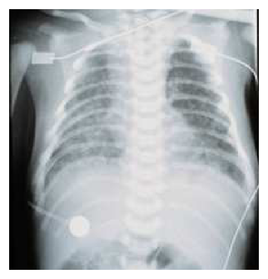
（A） 肺靜脈回流異常合併阻塞（B） 大血管轉位合併心室中膈缺損（C） 法洛氏四合症合併單側肺動脈缺失（D） 右心室雙出口合併肺動脈狹窄答案：（A）
詳解與考點 正解：圖中雙側肺野可見瀰漫性較粗糙、增加的肺血管與間質陰影，未見典型肺血流減少的表現；配合出生後第4天即出現嚴重發紺與呼吸急促，最符合肺靜脈回流異常合併阻塞（obstructed total anomalous pulmonary venous return, TAPVR）。肺靜脈回流受阻會造成肺靜脈壓升高、肺水腫與嚴重低氧；此時問題不在動脈導管是否開放，因此給予前列腺素 E1（prostaglandin E1, PGE1）維持動脈導管通暢通常無法改善，故選 A。
B：大血管轉位合併心室中膈缺損時，PGE1 可維持動脈導管通暢、增加血液混合，常有助於改善低氧；胸部X光亦較常呈肺血流增加而非以肺靜脈阻塞造成的肺水腫為主，故不符。
C：法洛氏四合症合併單側肺動脈缺失會造成肺血流減少，胸部X光預期可見患側肺血管紋理減少及肺野較透亮；圖示的雙側瀰漫肺鬱血樣陰影與急性呼吸窘迫不符。
D：右心室雙出口合併肺動脈狹窄的發紺主要來自肺血流受限，胸部X光通常是肺血管紋理減少；PGE1 在嚴重肺動脈狹窄而呈導管依賴肺循環時也可能改善氧合，與本題反應不符。
本題考點：完全性肺靜脈回流異常（total anomalous pulmonary venous return, TAPVR）合併阻塞會導致新生兒早發嚴重低氧、肺靜脈鬱血及肺水腫；前列腺素 E1（prostaglandin E1, PGE1）適用於部分導管依賴型先天性心臟病，但不能解除肺靜脈回流阻塞。
第 27 題
下列何種心臟病，最常合併Wolff-Parkinson-White症候群？
（A） Ebstein三尖瓣脈異常（B） 大血管轉位（TGA）（C） 法洛式四合症（TOF）（D） 心室中隔缺損（VSD）答案：（A）
詳解與考點 正解：Ebstein 三尖瓣畸形的三尖瓣附著位置異常，常合併心房中隔缺損與副傳導路，因此是先天性心臟病中最常與 Wolff-Parkinson-White syndrome 相關者，故選 A。
B：大血管轉位（TGA）主要是大血管連接異常與出生後嚴重發紺的問題，並非 WPW 的典型合併心臟病。
C：法洛式四合症（TOF）以右心室流出道阻塞、心室中隔缺損等結構異常為主，不具有與副傳導路的特異關聯。
D：心室中隔缺損（VSD）常見，但多為單純結構性缺損，和 WPW 的關聯遠不如 Ebstein 三尖瓣畸形。
本題考點：Wolff-Parkinson-White syndrome——由房室副傳導路（accessory pathway）造成預激與心搏過速；Ebstein anomaly 是其最經典的相關先天性心臟病。
第 28 題
1歲小男孩，突然臉色蒼白，冒冷汗，父母描述過去因心跳慢，曾於出生不久接受某種手術，身體診查發現心跳只有56次/分，緊急CXR如下。此小男孩最可能過去接受過何種手術？
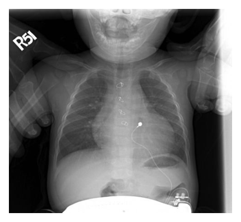
（A） pacemaker implantation（B） lobectomy（C） peridectomy（D） tracheostomy答案：（A）
詳解與考點 正解：胸部 X 光可見左下胸壁有脈搏產生器，並有導線向上進入胸腔、連接至心臟區域；患童又有出生後即因心跳過慢接受手術的病史，目前心跳僅 56次/分且出現蒼白、冒冷汗等低心輸出表現，最符合曾接受心律調節器植入（pacemaker implantation），故選 A。心律調節器可在嚴重緩慢性心律不整時提供電刺激以維持心率。
B：肺葉切除術（lobectomy）後的影像重點應是肺葉容積減少、縱膈偏移或術後肺部改變，無法解釋圖中的脈搏產生器與心臟導線，也不是治療出生後心跳過慢的手術。
C：心包膜切除術（pericardiectomy）用於縮窄性心包膜炎等心包膜疾病，不會在胸壁留下脈搏產生器及通往心臟的導線；其適應症亦非單純緩慢性心律不整。
D：氣管切開術（tracheostomy）是在頸部建立人工氣道，影像可見氣管造口管位置；本圖所示器材位於左下胸壁並有心臟導線，與氣管切開管的構造和位置不符。
本題考點：心律調節器（pacemaker）用於症狀性緩慢性心律不整（symptomatic bradyarrhythmia）；胸部 X 光可辨識脈搏產生器（pulse generator）及其心臟導線（pacing lead）；兒童嚴重心搏過緩合併低灌流症狀須考慮心律調節功能不足或失效。
第 29 題
18個月大的男孩，因昏迷被送到急診室，腦部電腦斷層攝影發現右顳部有硬腦膜下出血，身體診察無外傷。據母親敘述此男孩從小頭圍比正常小孩大，曾有醫師懷疑有水腦。下列那種先天性代謝疾病最為可能的診斷？
（A） 苯酮尿症（phenylketonuria）（B） 中鏈脂肪酸去氫酶缺乏症（medium chain acyl CoA dehydrogenase deficiency）（C） 戊二酸尿症第一型（glutaric aciduria type I）（D） 異戊酸血症（isovaleric acidemia）答案：（C）
詳解與考點 正解：嬰兒期頭圍偏大、疑似水腦，合併沒有外傷卻有硬腦膜下出血，提示腦萎縮使橋靜脈易受牽拉；這是戊二酸尿症第一型（glutaric aciduria type I）的典型警訊，故選 C。
A：苯酮尿症主要造成神經發展遲緩等問題，無法特異解釋巨頭與自發性硬腦膜下出血的組合。
B：中鏈脂肪酸去氫酶缺乏症常在禁食或感染時出現低酮性低血糖與意識改變，但不以巨頭或硬腦膜下出血為特徵。
D：異戊酸血症可造成代謝性失代償與高氨血症，卻不能合理連結本題的頭圍增大和硬腦膜下出血。
本題考點：戊二酸尿症第一型（glutaric aciduria type I）——為 lysine、hydroxylysine 與 tryptophan 代謝異常，可有巨頭、腦萎縮與硬腦膜下出血；須避免誤認為單純外傷。
第 30 題
小男孩來就診，非常矮，頭看起來很大，四肢短短的。醫師的診斷是侏儒症（achondroplasia）。醫師記得這是一種體染色體顯性遺傳疾病，但是患童的父母親身高卻是正常的。最適合的解釋為何？
（A） 醫師記錯了，侏儒症應該是隱性遺傳的（B） 父親其實不是很高，可能父親也有侏儒症，只是表現不完全（C） 隔代遺傳（D） 這個小男孩的疾病是來自新的突變答案：（D）
詳解與考點 正解：「體染色體顯性遺傳」卻有身高正常的雙親；軟骨發育不全症（achondroplasia）常由患兒自身新發生的 FGFR3 突變造成。顯性遺傳並不要求每一例都從表現型異常的父母承襲；突變若首次出現在患兒的生殖細胞來源或早期胚胎，即可使正常身高父母生下患童，故選 D。
A：軟骨發育不全症的典型遺傳模式確為體染色體顯性（autosomal dominant），不能因父母表現型正常便改判為隱性遺傳。
B：不完全外顯率可使某些顯性疾病的攜帶者表現不明顯，看似能解釋家族史；但軟骨發育不全症的表現型通常明確，題幹所述組合更典型地指向（D）新突變。
C：隔代遺傳是隱性遺傳或外顯率問題常見的家系外觀，不能作為本病由正常雙親生下患兒的最適解釋。
本題考點：軟骨發育不全症（achondroplasia）是 FGFR3 相關的體染色體顯性疾病；新發突變（de novo mutation）可使沒有家族史的正常表現型雙親生下患兒。
第 31 題
家族型高膽固醇血症，有可能是因為低密度脂蛋白受體基因突變所引起。一對夫妻有一位5歲的小孩，身上出現黃色瘤（xanthoma）而就診。抽血檢查後發現其膽固醇大於1000 mg/dL。如果醫師進行家族分析，發現父母親的血中膽固醇都介於300 mg/dL到400 mg/dL之間。對於這個家族疾病遺傳的敘述，下列何者不適當？
（A） 如果只著眼於血中膽固醇大於1000 mg/dL的同合子（homozygous）突變，這是一種隱性遺傳（B） 如果著眼於膽固醇有升高，這是一種顯性遺傳（C） 同樣的基因突變卻不一樣的表現，表示有epigenetics出現（D） 家族中很可能還有其他的成員有高膽固醇血症答案：（C）
詳解與考點 正解：患兒膽固醇大於 1000 mg/dL、父母各為 300–400 mg/dL，符合父母為異合子、患兒承襲兩個異常 LDL 受體等位基因而病情特別嚴重的家族型高膽固醇血症（familial hypercholesterolemia）。嚴重程度不同的直接原因是基因劑量：同合子與異合子帶有的致病等位基因數不同；不能稱作「同樣的基因突變卻不一樣的表現」並逕自歸因於 epigenetics，故不適當的是 C。
A：若僅把極重度的同合子表現當成欲判定的性狀，必須由父母各提供一個異常等位基因才會出現，呈現類隱性（recessive-like）的家系觀察；此說法是在限定所觀察的表現型，非本題最不適當的敘述。
B：父母本身已有膽固醇升高，表示帶有一個致病等位基因的異合子就可表現疾病，符合體染色體顯性（autosomal dominant）遺傳。
D：既然父母膽固醇皆升高，家系中其他一等親或近親也可能帶有相同致病等位基因並有高膽固醇血症，值得進行家族篩檢。
本題考點：家族型高膽固醇血症（familial hypercholesterolemia）常呈體染色體顯性遺傳；基因劑量（gene dosage）使同合子或複合異合子表現遠重於異合子，不能與表觀遺傳（epigenetics）混為一談。
第 32 題
9個月大的男嬰，上週健康檢查時體重10公斤。過去一週他持續有腹瀉的現象。今天尿布只換了2次，晚上父母送來急診就診。身體檢查發現男嬰體重9.2公斤，男嬰眼窩下凹，哭鬧不安，但是很少眼淚。男嬰血壓82/46 mmHg，心跳每分鐘170下，呼吸每分鐘21下。男嬰的脫水程度為：
（A） 男嬰有輕度脫水現象（B） 男嬰有中度脫水現象（C） 男嬰有重度脫水現象（D） 男嬰有休克現象本題送分，無標準答案
詳解與考點 本題經考選部公告一律給分。作答任一選項皆得分。原因是脫水的體重百分比與臨床分類並非完全一對一；體重下降接近中度範圍、凹眼少淚支持中度，但少尿、心動過速又可提示代償性循環受損。題幹未提供微血管再充填、四肢灌流、黏膜與精神狀態的完整資訊，故不能可靠區分中度、重度或早期休克；各分類採用的切點也不確定，故送分。
A：由10公斤降至9.2公斤，加上凹眼、少淚與明顯少尿，已超出只有輕度體液流失時常見的表現，不能穩妥歸為輕度。
B：約8%的體重下降及凹眼、少淚、煩躁、心跳增快，可與中度脫水相符；這是依體重與表徵估計時相當合理的分類。
C：重度脫水通常還需更明顯的灌流不良、意識改變或循環衰竭線索。這些資訊未被完整描述，因此不能只靠少尿與心動過速確定重度。
D：幼兒可先出現代償性休克而未必立刻低血壓，但題幹缺乏末梢灌流、微血管再充填與意識惡化等資料，不能直接把目前狀態定為休克。
本題考點：小兒脫水（pediatric dehydration）應綜合體重變化與理學檢查；循環灌流（perfusion）比單一血壓更早反映代償；休克（shock）可在低血壓前出現。
第 33 題
承上題，抽血檢查結果[Na+]136 mmol/L；[K+]4.2 mmol/L，請算出男嬰接下來24小時最適合的水分總需要量？
（A） 前2個小時先給200 mL生理食鹽水，後24小時再給1600 mL輸液（B） 前2個小時先給200 mL生理食鹽水，後24小時再給1000 mL輸液（C） 前8個小時先給500 mL生理食鹽水，後16小時再給500 mL輸液（D） 前8個小時先給600 mL生理食鹽水，後16小時再給1000 mL輸液本題送分，無標準答案
詳解與考點 本題經考選部公告一律給分。本題為題組「承上題」之延續計算題，惟本站資料未附前題完整病史、體重及脫水程度等關鍵前提數據，導致(A)(B)(C)(D)四種輸液分配方案所依據之計算基礎無法還原查核，任一選項是否為正確答案均缺乏可驗證依據，屬題幹資訊不完整所致之爭議。此類小兒體液電解質題目本應依前題所給體重、脫水百分比及缺水量以Holliday-Segar公式逐步計算，然此關鍵前提缺漏。作答以現行小兒科學體液電解質治療教材為準。
第 34 題
20歲女性，使用染髮劑後引起如圖所示之反應，下列敘述何者錯誤？
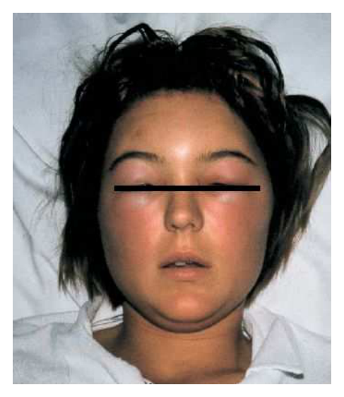
（A） 染髮劑引起過敏反應最常見的成分為para-phenylenediamine（B） 染髮劑引起的皮膚炎屬於第四型過敏反應（C） 染髮劑引起的皮膚炎屬於第二型過敏反應（D） 貼膚試驗有助於確認過敏成分答案：（C）
詳解與考點 正解：圖中可見雙側眼瞼與臉部明顯紅腫、水腫，且於使用染髮劑後出現，符合染髮劑造成的過敏性接觸皮膚炎（allergic contact dermatitis）。此反應由已致敏的 T 細胞介導，屬第四型過敏反應（type IV hypersensitivity），因此稱其屬第二型過敏反應的（C）敘述錯誤，故選 C。
A：染髮劑最常見的致敏原為 para-phenylenediamine（PPD），可造成頭皮邊緣、耳周、眼瞼及臉部的紅斑、搔癢與水腫；本例臉部與眼瞼腫脹的外觀亦與此類反應相符，故敘述正確。
B：過敏性接觸皮膚炎是先經致敏、再於重新接觸抗原後引發的延遲型反應，主要由 T lymphocyte 介導，屬第四型過敏反應，故不是本題要找的錯誤敘述。
D：貼膚試驗（patch test）可將疑似過敏原以標準濃度接觸皮膚後判讀延遲反應，能協助確認是否對 PPD 或其他染髮劑成分致敏，故敘述正確。
本題考點：過敏性接觸皮膚炎（allergic contact dermatitis）屬 T 細胞介導的第四型過敏反應（type IV hypersensitivity）；para-phenylenediamine（PPD）是染髮劑常見致敏原；貼膚試驗（patch test）用於辨識接觸性過敏原。
第 35 題
5歲男孩，腳底出現如圖所示之症狀，下列何者為最適合的診斷？
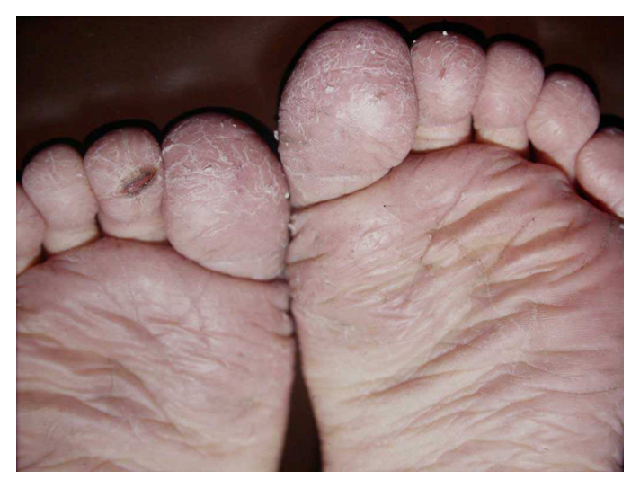
（A） tinea pedis（B） juvenile plantar dermatosis（C） ichthyosis（D） asteatotic eczema答案：（B）
詳解與考點 正解：圖中可見雙側前足與趾腹對稱性乾燥、脫屑及淺表龜裂，足底負重區較明顯，而趾縫未見典型浸軟脫屑。5歲兒童出現此種前足反覆摩擦與乾燥相關的「濕亮、龜裂」外觀，最符合 juvenile plantar dermatosis，故選 B。
A：tinea pedis 雖可造成足部脫屑，但常見趾縫浸軟、脫屑與裂隙，或呈單側較明顯的角化脫屑；圖中以對稱的趾腹與前足乾燥龜裂為主、趾縫相對保留，較不符合足癬。
C：ichthyosis 是遺傳性角化異常，通常為較廣泛、慢性的鱗屑性皮膚乾燥，可累及四肢伸側與軀幹，並非侷限於兒童前足負重區與趾腹的局部病灶。
D：asteatotic eczema 常見於皮脂分泌減少的中老年人，典型為四肢尤其小腿的細碎龜裂與乾燥，如乾裂瓷器樣外觀；5歲男孩的前足對稱性脫屑龜裂不符合其常見年齡及分布。
本題考點：幼年足底皮膚炎（juvenile plantar dermatosis）常見於兒童，與反覆摩擦、悶熱及乾濕交替相關，主要侵犯前足與趾腹而常保留趾縫；足癬（tinea pedis）則常有趾縫浸軟脫屑，為重要鑑別。
第 36 題
43歲男性，在頭部、肘部、膝部、四肢及軀幹出現如圖之皮膚病變，反覆有10年之久。KOH鏡檢沒發現黴菌，而病理組織檢查如圖。患者除了皮膚之外，最容易侵犯何種器官？
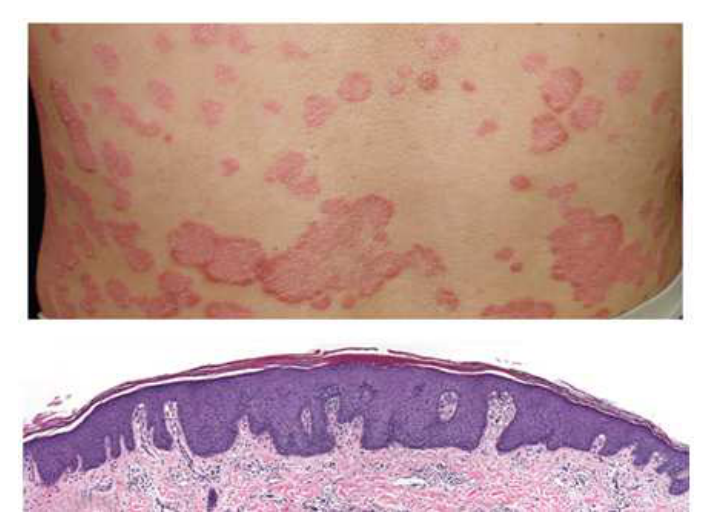
（A） 腎臟（B） 心臟（C） 關節（D） 肌肉答案：（C）
詳解與考點 正解：反覆 10 年的頭皮、肘部、膝部與軀幹四肢界線清楚紅色鱗屑斑塊，KOH 陰性，配合圖中表皮增厚、規則性表皮嵴延長與表層角化異常的病理表現，符合乾癬（psoriasis）。乾癬重要的皮膚外表現為乾癬性關節炎（psoriatic arthritis），可造成周邊關節炎、脊椎炎、肌腱附著點炎或指趾炎，故選 C。
A：腎臟不是乾癬最典型、最容易受侵犯的皮膚外器官。雖然嚴重慢性發炎或治療可能伴隨腎臟風險，但不能作為本題的主要關聯。
B：乾癬患者的心血管代謝風險可增加，但心臟並非乾癬最具代表性的直接侵犯部位；相較之下，關節炎是臨床上需主動篩檢的典型共病。
D：肌肉並非乾癬常見的直接侵犯器官。若患者主訴肌無力或肌肉酵素上升，應另考慮發炎性肌病等不同診斷。
本題考點：乾癬（psoriasis）的典型分布與病理——頭皮及伸側肢體的鱗屑斑塊，組織可見表皮增生與角化異常；乾癬性關節炎（psoriatic arthritis）是重要的皮膚外表現，應留意關節腫痛、晨僵、指趾炎及肌腱附著點疼痛。
第 37 題
關於玫瑰糠疹（pityriasis rosea）的敘述，下列何者錯誤？
（A） 病灶存在時間常小於一週（B） 常可見先驅病灶（herald patch）（C） 典型表徵呈現聖誕樹樣分布（Christmas tree pattern）（D） 鑑別診斷包括二期梅毒（secondary syphilis）答案：（A）
詳解與考點 正解：玫瑰糠疹（pityriasis rosea）的自然病程；它是自限性皮疹，但通常持續數週，而非病灶常在一週內消失。因此（A）把病程說得過短，是本題的錯誤敘述，故選 A。
B：先出現單一較大的先驅病灶（herald patch），之後才出現較廣泛皮疹，是玫瑰糠疹的典型演變。
C：繼發性橢圓鱗屑斑常沿皮膚張力線排列，在軀幹背部可呈聖誕樹樣分布（Christmas tree pattern），是重要辨識線索。
D：二期梅毒（secondary syphilis）可造成廣泛丘疹或鱗屑疹，臨床上可能模仿玫瑰糠疹，因此確為應考慮的鑑別診斷。
本題考點：玫瑰糠疹（pityriasis rosea）的典型表現包括先驅病灶（herald patch）與聖誕樹樣分布（Christmas tree pattern）；自然病程通常以週計，不是數日即消退。
第 38 題
台中市38歲男性，2週前太魯閣旅遊，回家後出現發燒、頭痛、全身倦怠感，及皮膚紅疹（如圖A）。理學檢查發現在右肘窩病灶（如圖B），最可能的診斷為何？
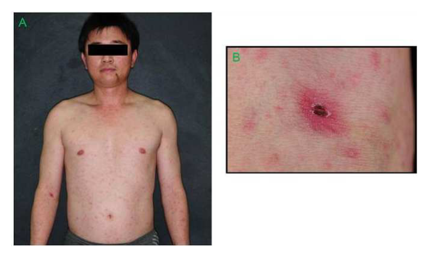
（A） 鉤端螺旋體（leptospirosis）（B） 二期梅毒（secondary syphilis）（C） 麻疹（measles）（D） 恙蟲病（scrub typhus）答案：（D）
詳解與考點 正解：太魯閣旅遊後出現發燒、頭痛、倦怠與全身紅疹，且圖B右肘窩可見中央黑褐色壞死痂皮、周圍紅暈的焦痂（eschar），是恙蟲病的典型病灶。恙蟲病由恙蟎幼蟲叮咬傳播 Orientia tsutsugamushi，焦痂合併發燒與斑丘疹最具指向性，故選 D。
A：鉤端螺旋體病常與受污染水源或動物尿液接觸相關，可有發燒、頭痛及結膜充血，但不會形成圖B所示的典型焦痂；全身紅疹也不是其最具代表性的表現。
B：二期梅毒可出現廣泛斑丘疹，常累及手掌與足底，但病程並非恙蟎叮咬後的急性發燒症候群，亦不會在肘窩形成中央壞死的焦痂。
C：麻疹可有發燒與全身性紅疹，但典型特徵是前驅期的咳嗽、流鼻水、結膜炎及口腔 Koplik spots，皮疹多自臉部向下蔓延；圖B的焦痂不符合麻疹。
本題考點：恙蟲病（scrub typhus）由 Orientia tsutsugamushi 感染引起，經恙蟎幼蟲傳播；焦痂（eschar）是重要診斷線索，常合併急性發燒、頭痛與斑丘疹。
第 39 題
36歲男性，主訴最近一星期，雙手掌及足底出現如圖所示之皮膚病變。那一項實驗室檢查對疾病確診最有幫忙？
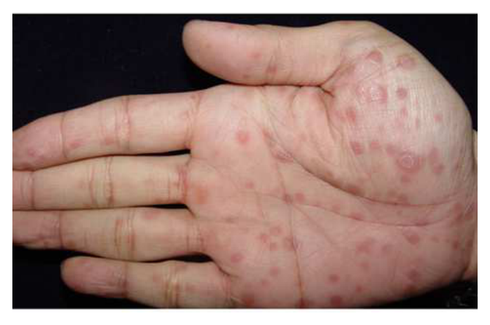
（A） 細菌培養（bacteria culture）（B） KOH鏡檢（KOH examination）（C） 貼膚試驗（patch test）（D） VDRL及TPHA答案：（D）
詳解與考點 正解：圖中雙手掌可見多發、散在的紅褐色圓形丘疹，部分有細薄鱗屑；結合成人在短期內同時出現手掌及足底皮疹，典型要考慮第二期梅毒（secondary syphilis）。第二期梅毒常有瀰漫性、可累及手掌與足底的丘疹性皮疹。VDRL 是非梅毒螺旋體試驗，可作為篩檢及追蹤治療反應；TPHA 為梅毒螺旋體試驗，可用於確認感染，故選 D。
A：細菌培養適用於懷疑膿痂疹、蜂窩性組織炎等細菌性皮膚感染；本圖病灶不是以膿皰、滲出或局部急性發炎為主，且手掌、足底對稱性丘疹的分布更支持全身性疾病，不是細菌培養最有助於確診的情境。
B：KOH鏡檢用於偵測皮屑中的真菌菌絲或孢子，適合懷疑皮癬菌感染時使用；手癬、足癬通常呈較明顯的邊界、脫屑或角化，未必形成這種多發散在的掌蹠丘疹，故不是本題首選。
C：貼膚試驗用於診斷延遲型接觸性過敏反應（allergic contact dermatitis），應有與特定接觸物相關的濕疹樣紅斑、搔癢或水疱表現；本題掌蹠多發丘疹的形態與分布不符合典型接觸性皮膚炎。
本題考點：第二期梅毒（secondary syphilis）可出現累及手掌、足底的瀰漫性丘疹性皮疹；VDRL（Venereal Disease Research Laboratory test）為非梅毒螺旋體試驗，可篩檢與追蹤；TPHA（Treponema pallidum hemagglutination assay）為梅毒螺旋體試驗，可協助確認感染。
第 40 題
45歲女性糖尿病患，3天前於右側額部出現叢集樣水疱（grouped vesicles）合併紅斑，同側鼻尖亦出現數個水疱，下列何者為最需要之檢查？
（A） 皮膚劃紋反應（dermatographism）（B） KOH鏡檢（C） 眼科檢查（D） 伍氏燈檢查（Wood's light examination）答案：（C）
詳解與考點 正解：右額部單側群聚水疱合併同側鼻尖水疱，符合三叉神經眼支帶狀疱疹；鼻尖病灶提示鼻睫神經受累（Hutchinson sign），與眼部侵犯風險相關。糖尿病也增加感染併發症的顧慮，最需要的是及早眼科檢查以評估角膜、葡萄膜等眼部病灶，故選 C。
A：皮膚劃紋反應（dermatographism）用於評估物理性蕁麻疹，無法評估帶狀疱疹是否侵犯眼部。
B：KOH 鏡檢主要尋找真菌菌絲或孢子；本題的單側節段性群聚水疱與鼻尖線索較符合帶狀疱疹，而非皮癬菌感染。
D：伍氏燈檢查（Wood's light examination）可協助某些色素異常或感染的檢查，不能取代對疑似眼帶狀疱疹的眼科裂隙燈等評估。
本題考點：眼帶狀疱疹（herpes zoster ophthalmicus）發生於三叉神經眼支；鼻尖受累的 Hutchinson sign 提示鼻睫神經及眼部侵犯風險，須安排眼科評估。
第 41 題
70歲女性，左側耳後有如左圖之腫瘤，數年之久，病理組織切片結果如右圖；下列何者為最適當的診斷？
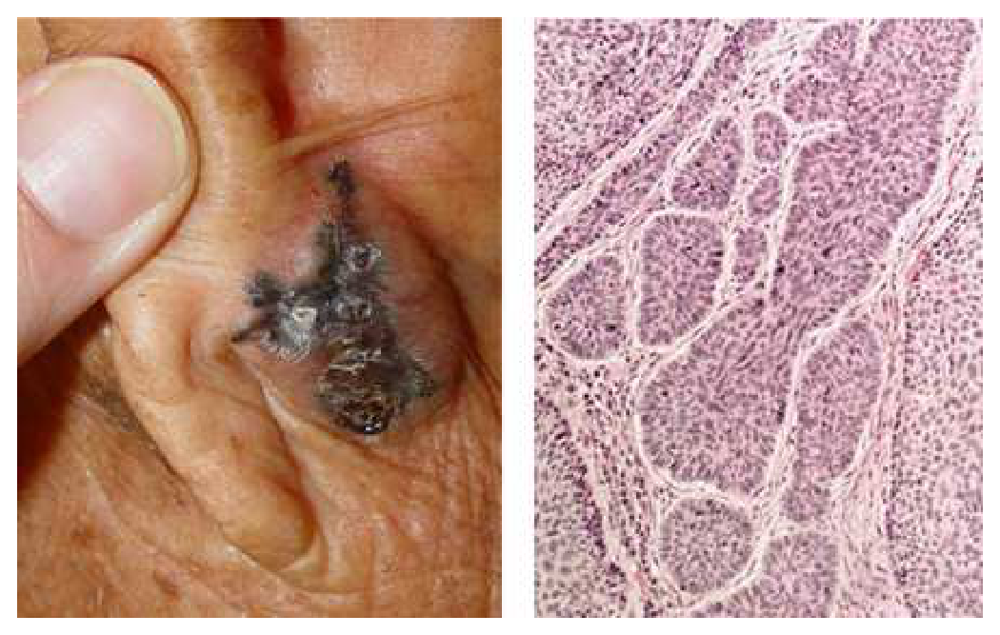
（A） 鱗狀細胞癌（squamous cell carcinoma）（B） 基底細胞癌（basal cell carcinoma ）（C） 惡性黑色素細胞癌（malignant melanoma）（D） 脂漏性角化症（seborrheic keratosis）答案：（B）
詳解與考點 正解：左圖為耳後長期存在、具色素與潰瘍結痂外觀的皮膚腫瘤；右圖可見真皮內由深染基底樣細胞構成的多個腫瘤巢，腫瘤巢周邊呈柵欄樣排列，且與周圍間質間可見裂隙，為基底細胞癌（basal cell carcinoma）的典型組織形態。基底細胞癌常發生於日光曝曬部位的老年人，局部破壞性生長而遠端轉移罕見，故選 B。
A：鱗狀細胞癌（squamous cell carcinoma）組織上應見異型鱗狀細胞侵入真皮、角化或角珠形成；本圖主要是基底樣細胞巢及周邊柵欄樣排列，並非鱗狀分化的形態。
C：惡性黑色素細胞癌（malignant melanoma）可有不規則色素性病灶，但組織上應見異型黑色素細胞在表皮交界處或真皮內不規則增生；本圖的規則基底樣細胞巢與間質裂隙更支持基底細胞癌，色素外觀是容易混淆之處。
D：脂漏性角化症（seborrheic keratosis）通常為表淺、界線清楚的良性角化性丘疹或斑塊，病理可見角化過度、棘層增厚與角質囊腫；本圖有真皮內腫瘤細胞巢的浸潤性腫瘤形態，不符脂漏性角化症。
本題考點：基底細胞癌（basal cell carcinoma）的臨床與病理——好發於日光曝曬處，病理特徵為基底樣細胞巢、周邊柵欄樣排列（peripheral palisading）及腫瘤巢周圍裂隙（retraction cleft）；須與鱗狀細胞癌（squamous cell carcinoma）的角化分化及惡性黑色素細胞癌（malignant melanoma）的黑色素細胞異型增生區分。
第 42 題
關於硬皮症（morphea）的敘述，下列何者錯誤？
（A） 硬皮症之皮膚病灶和全身性硬化症（systemic sclerosis）的皮膚病灶可明顯區分（B） 極少見影響內臟器官，預後良好（C） 常有雷諾氏現象（Raynaud phenomenon）（D） 線形硬皮症（linear morphea）好犯於兒童之四肢答案：（C）
詳解與考點 正解：局限性硬皮症（morphea）與全身性硬化症（systemic sclerosis）的區別。morphea 主要侷限於皮膚及皮下組織，通常不具有全身性硬化症的血管病變，因此「常有雷諾氏現象」不正確，故選 C。
A：morphea 的斑塊或線形皮膚硬化可與全身性硬化症的廣泛、對稱性皮膚增厚及其他系統表現區別，敘述正確。
B：morphea 極少影響內臟器官，整體預後通常良好；這點正是它與全身性硬化症的重要差異。
D：線形硬皮症（linear morphea）較常見於兒童，常累及單側肢體並可能影響較深層組織，敘述正確。
本題考點：局限性硬皮症（morphea）以皮膚局部硬化為主，少有內臟侵犯；雷諾氏現象（Raynaud phenomenon）較支持全身性硬化症（systemic sclerosis）的血管病變。
第 43 題
68歲男性，長期使用多種藥物，最近發現在鼻、頰及耳部有藍灰色色素沉著，下列何種藥物，可能與其皮膚症狀相關？
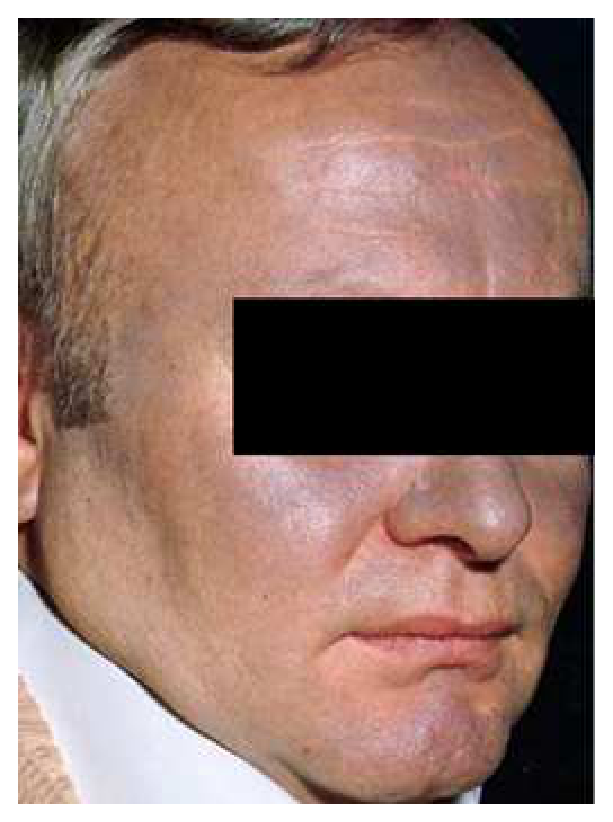
（A） amiodarone（B） aspirin（C） omeprazole（D） magnesium oxide答案：（A）
詳解與考點 正解：圖中可見鼻部、雙頰與耳部等日光暴露處呈藍灰色色素沉著，符合長期使用 amiodarone 後的典型皮膚不良反應。amiodarone 可造成光敏感與藍灰色皮膚變色，常出現在臉部等曝曬區域，故選 A。
B：aspirin 是抗血小板與止痛退燒藥，常見不良反應為胃腸道刺激、出血及過敏反應；並不會造成此種以鼻、頰、耳為主的藍灰色色素沉著。
C：omeprazole 是質子幫浦抑制劑（proton pump inhibitor, PPI），主要用於抑制胃酸；雖可能有皮疹等少見皮膚不良反應，但非長期使用後曝曬部位藍灰色變色的典型原因。
D：magnesium oxide 常作為制酸劑或滲透性瀉劑，其不良反應較常與腹瀉及高鎂血症相關，並不符合圖中藍灰色色素沉著的表現。
本題考點：amiodarone 的皮膚不良反應（cutaneous adverse effects）——長期使用可引起光敏感（photosensitivity）及日光暴露區的藍灰色色素沉著；藥物誘發色素沉著（drug-induced hyperpigmentation）應依顏色、分布與用藥史辨識。
第 44 題
20歲男性，智力輕度發展遲緩，因為癲癇送到急診，理學檢查發現腰部有一個小脫色斑，以及臉上的丘疹，如圖所示，最可能的診斷為何？
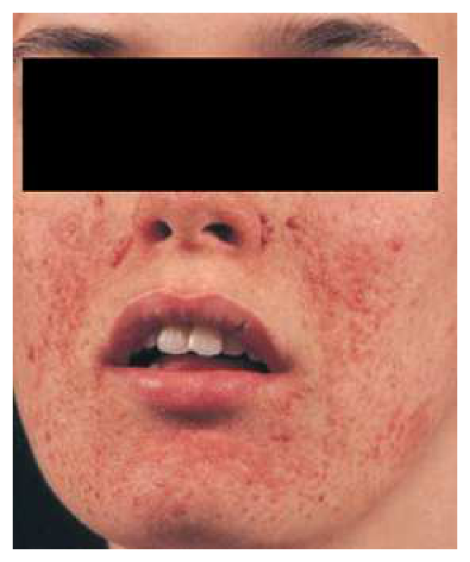
（A） 結節性硬化症（tuberous sclerosis）（B） 第一型神經纖維瘤症（neurofibromatosis type I）（C） 白斑（vitiligo）（D） 漢生病（leprosy）答案：（A）
詳解與考點 正解：結節性硬化症（tuberous sclerosis）最符合。患者有癲癇、輕度智能發展遲緩、腰部脫色斑，圖中雙側鼻翼、鼻唇溝及雙頰可見多發紅褐色小丘疹，為典型臉部血管纖維瘤（facial angiofibromas）。神經系統與皮膚表現合併時，應診斷為結節性硬化症，故選 A。
B：第一型神經纖維瘤症（neurofibromatosis type I）常見 café-au-lait spots、腋窩或腹股溝雀斑樣色素沉著及神經纖維瘤；其皮膚病灶不是本圖所示的對稱性臉部血管纖維瘤，也無法較完整解釋脫色斑與癲癇的組合。
C：白斑（vitiligo）可造成界線清楚的脫色斑，但只能解釋腰部皮膚色素減退，不能解釋圖中的多發臉部丘疹、癲癇及智能發展遲緩；脫色斑在本題是結節性硬化症的低色素斑（hypomelanotic macule）表現。
D：漢生病（leprosy）可有色素減退斑，但典型病灶常伴感覺減退、周邊神經受累或皮膚浸潤性變化；本圖的丘疹分布與神經皮膚症候群的臉部血管纖維瘤相符，且漢生病不能合理整合本題的癲癇與發展遲緩。
本題考點：結節性硬化症（tuberous sclerosis complex, TSC）是神經皮膚症候群（neurocutaneous syndrome），常見癲癇、發展遲緩及低色素斑；臉部血管纖維瘤（facial angiofibroma）是重要的特徵性皮膚表現。
第 45 題
惡性黑色棘皮症（malignant acanthosis nigricans）最常合併那種系統的腫瘤？
（A） 呼吸系統（B） 腸胃系統（C） 生殖系統（D） 泌尿系統答案：（B）
詳解與考點 正解：惡性黑色棘皮症（malignant acanthosis nigricans），它是副腫瘤性皮膚表徵，最常提示腸胃系統惡性腫瘤，尤其應警覺胃部腺癌。因此優先搜尋腸胃系統腫瘤，故選 B。
A：呼吸系統惡性腫瘤可出現其他副腫瘤症候群，但不是惡性黑色棘皮症最典型的相關系統。
C：生殖系統腫瘤並非本症最常見的腫瘤來源；看到快速出現、廣泛的黑色棘皮症時，首先應想到（B）腸胃道惡性腫瘤。
D：泌尿系統腫瘤也不是惡性黑色棘皮症最常見的關聯，不能作為首選答案。
本題考點：惡性黑色棘皮症（malignant acanthosis nigricans）是副腫瘤症候群（paraneoplastic syndrome）；其與腸胃道惡性腫瘤，特別是胃部腺癌的關聯最具代表性。
第 46 題
80歲女性，有高血壓與心房顫動病史，突發左側顏面與左側肢體無力，左上肢肌力為1分，左下肢肌力為3分，兩眼偏向右看，無明顯的視野缺損與忽略。病灶最可能在何處？
（A） 右大腦額葉（frontal lobe）（B） 右大腦頂葉（parietal lobe）（C） 右內囊與被殼（internal capsule and putamen）（D） 右橋腦（pons）答案：（A）
詳解與考點 正解：突發左顏面及左上肢無力較左下肢嚴重，且雙眼偏向右側。右側大腦半球病灶造成對側無力；急性破壞右額葉額眼場（frontal eye field）時，眼球偏向病灶側。額葉外側運動皮質受累亦可解釋顏面與上肢較重的無力，故選 A。
B：右頂葉病灶較常以對側感覺、空間注意或忽略問題為主；本題沒有明顯忽略，且眼偏與上肢、顏面運動缺損更支持（A）額葉。
C：右內囊與被殼病灶可造成對側運動缺損，但常呈顏面、上肢、下肢較一致的純運動表現，較難解釋明顯的共同凝視偏向。
D：右橋腦病灶常合併交叉性腦神經徵象或特定眼球運動障礙；本題的皮質性凝視偏向與皮質運動分布較不相符。
本題考點：大腦半球急性病灶的側化（cerebral lateralization）——運動無力多在對側，破壞性額眼場（frontal eye field）病灶使眼球偏向病灶側；上肢與顏面優勢無力支持大腦中動脈皮質區受累。
第 47 題
73歲女性，過去有高血壓與心律不整病史，突發左下肢無力、全身動作與說話變少，神經學檢查顯示意識正常，語言理解能力尚可，左下肢肌力下降，其它肢體肌力尚正常，臨床診斷為急性腦梗塞中風。最可能的病變血管為何？
（A） 右側前大腦動脈（anterior cerebral artery）（B） 右側中大腦動脈（middle cerebral artery）（C） 右側後大腦動脈（posterior cerebral artery）（D） 基底動脈（basilar artery）答案：（A）
詳解與考點 正解：急性左下肢單獨無力合併動作與言語減少，但理解仍可。前大腦動脈（anterior cerebral artery, ACA）供應內側額葉及下肢運動皮質；右側 ACA 梗塞會造成左下肢較明顯無力，內側額葉受累還可出現動作減少、意志缺乏（abulia），故選 A。
B：中大腦動脈（middle cerebral artery, MCA）供應外側大腦皮質，典型缺損是對側顏面與上肢較下肢嚴重，與本題孤立下肢優勢無力不符。
C：後大腦動脈（posterior cerebral artery, PCA）梗塞較常見對側視野缺損、記憶或丘腦相關症狀，不是下肢運動無力的典型血管分布。
D：基底動脈（basilar artery）病變通常造成腦幹徵象、雙側長束徵象或意識障礙，無法以單側下肢為主的皮質症候群充分解釋。
本題考點：前大腦動脈梗塞（anterior cerebral artery infarction）主要影響內側額頂葉的下肢皮質表徵，造成對側下肢無力；內側額葉受累可出現意志缺乏（abulia）。
第 48 題
李先生，75歲，有高血壓、糖尿病病史，因突發性右側肢體乏力，兩側眼球偏轉到左側，合併意識障礙而住院診治。如果李先生是腦梗塞患者，下列何者正確？
（A） 是右側中大腦動脈區梗塞（B） 腦水腫（edema）在梗塞後第1天最嚴重，3天後慢慢緩解（C） 病人是小血管小洞性梗塞（small-vessel lacunar infarction）（D） 預測病人預後不佳，有高死亡率答案：（D）
詳解與考點 正解：右側肢體乏力、兩眼偏左及意識障礙，定位為左側大腦半球的大範圍皮質梗塞，最符合左側中大腦動脈（middle cerebral artery, MCA）重度梗塞。這種大血管、大範圍梗塞容易伴隨腦水腫、顱內壓上升與意識惡化，預後較差且死亡風險高，故選 D。
A：右側中大腦動脈梗塞會造成左側肢體無力；本題是右側無力，病灶側應在左側，故側化錯誤。
B：缺血性腦梗塞的腦水腫通常不是第 1 天即最嚴重，而是在之後數日達高峰；此選項把時間病程顛倒。
C：小血管小洞性梗塞（small-vessel lacunar infarction）多為較小的深部病灶，常見純運動或純感覺症候群，通常不會造成凝視偏向、意識障礙等大範圍皮質徵象。
本題考點：中大腦動脈梗塞（middle cerebral artery infarction）的側化與皮質徵象——病灶對側無力、眼球偏向病灶側；惡性大腦中動脈梗塞（malignant MCA infarction）因大範圍水腫而有較差預後。
第 49 題
關於皮質傳播性抑制（cortical spreading depression）的敘述，下列何者正確？
（A） 由腦部額葉向枕葉方向傳遞（B） 傳導速度是每分鐘2～3公分（C） 後續會有血流降低的現象（D） 傳導的區域和血管分布的位置相關答案：（C）
詳解與考點 正解：皮質傳播性抑制（cortical spreading depression），即一波緩慢在皮質連續傳播的去極化與神經活動抑制，常用來解釋偏頭痛先兆。其後會出現局部腦血流降低（oligemia）現象，因此正確的是 C。
A：典型傳播方向與偏頭痛視覺先兆相符時，常由枕葉皮質向前傳播，不是由額葉向枕葉。
B：它的傳播速度很慢，量級為每分鐘數毫米；選項寫成每分鐘 2–3 公分，將距離單位放大，因而不正確。
D：皮質傳播性抑制是沿相鄰皮質組織傳遞的現象，不遵循特定動脈供應區的邊界，故不能以血管分布位置來定義傳導區域。
本題考點：皮質傳播性抑制（cortical spreading depression）為緩慢傳播的皮質去極化波；偏頭痛先兆（migraine aura）可伴隨後續局部腦血流降低（oligemia），其分布不等同血管領域。
第 50 題
下列關於失神性癲癇（absence seizures）的敘述，何者錯誤？
（A） 診斷的依據是腦電圖出現不對稱、不定頻率的棘慢複合波（spike-and-wave complexes）（B） 腦雙側對稱3Hz的棘慢複合波容易以過度換氣誘發（C） 絕大部分的失神性癲癇在青少年期開始發作（D） 失神性癲癇發作時常有眨眼、咀嚼或上肢肌張力微增的現象本題送分，無標準答案
詳解與考點 本題經考選部公告一律給分。(A)敘述失神性癲癇腦波應為兩側對稱、規則的3Hz棘慢複合波，「不對稱、不定頻率」明顯錯誤；但(C)稱「絕大部分在青少年期開始發作」亦有爭議，因典型失神性癲癇多好發於學齡兒童（約4至10歲），青少年型僅屬少數亞型，兩者何者才是命題者要選的錯誤選項無法確定，故送分。(B)過度換氣確為誘發3Hz棘慢波之經典方法，(D)發作時眨眼、咀嚼等自動症亦屬典型表現，均正確。作答以現行神經學教科書失神性癲癇分類為準。
第 51 題
下列關於青少年肌陣攣癲癇（juvenile myoclonic epilepsy）的敘述，何者錯誤？
（A） 發作都是全面癲癇發作（generalized seizures）（B） 以晨間睡醒時肌陣攣發作（myoclonic seizures）為主（C） 大部分無法痊癒（D） 目前尚未發現家族癲癇病史的相關性答案：（D）
詳解與考點 正解：青少年肌陣攣癲癇（juvenile myoclonic epilepsy, JME）的遺傳傾向。JME 常有家族聚集與遺傳相關性，雖非每名患者都能找到明確家族史，但「目前尚未發現相關性」明顯錯誤，故選 D。
A：JME 屬遺傳性全面性癲癇症候群，典型發作型態為全面性（generalized）肌陣攣發作，也可合併全面性強直陣攣或失神發作，敘述正確。
B：清晨睡醒後出現上肢肌陣攣是 JME 最具代表性的臨床線索，睡眠不足與酒精可降低發作閾值。
C：JME 雖常可用藥物控制，但多數患者傾向長期治療，停藥後有復發風險；將其視為通常可完全痊癒的疾病並不恰當。
本題考點：青少年肌陣攣癲癇（juvenile myoclonic epilepsy）屬遺傳性全面性癲癇（genetic generalized epilepsy）；晨間肌陣攣（morning myoclonus）與家族聚集性是重要特徵。
第 52 題
下列關於簡單型熱痙攣（simple febrile seizure）之敘述，何者錯誤？
（A） 於一歲以前發作者，易再發（B） 與將來是否智能不足無關（C） 與將來是否有行為異常無關（D） 即使神經理學檢查正常，其死亡率仍較正常人顯著增加答案：（D）
詳解與考點 正解：「簡單型」熱痙攣（simple febrile seizure），其特徵是全身性、短暫、在同一次發燒期間不反覆，且發作後神經學狀態恢復。神經學檢查正常的兒童不會因單純熱痙攣而有顯著增加的死亡率；（D）與此良性預後相反，故為錯誤敘述。
A：較小年齡首次發作是日後再發熱痙攣的危險因子之一，因此 1 歲前發作者較易再發，敘述正確。
B：簡單型熱痙攣本身通常不會導致智力不足；後續神經發展應依兒童原本的發展狀態與其他病因評估。
C：在原本神經發展正常的兒童，簡單型熱痙攣通常不會造成日後行為異常，敘述正確。
本題考點：簡單型熱痙攣（simple febrile seizure）是良性且預後佳的發燒相關痙攣；再發風險（recurrence risk）可受首次發作年齡影響，但不代表死亡率或神經發展後果顯著升高。
第 53 題
阿茲海默症（Alzheimer disease）之患者，其腦部病理變化和臨床症狀最有相關性者是：
（A） Negri body（B） neurofibrillary tangles（C） Lewy body（D） Hirano body答案：（B）
詳解與考點 正解：阿茲海默症（Alzheimer disease）中「與臨床症狀最相關」的病理變化。神經纖維糾結（neurofibrillary tangles）由異常磷酸化 tau 蛋白累積形成，其分布與數量和認知功能障礙程度的相關性最強，故選 B。
A：Negri body 是狂犬病（rabies）感染神經元可見的胞質內包涵體，不是阿茲海默症的典型病理變化。
C：Lewy body 以 α-synuclein 聚集為主，典型關聯為路易氏體失智症與巴金森病，而非阿茲海默症症狀嚴重度最相關的指標。
D：Hirano body 是可在海馬迴等處見到的嗜酸性棒狀包涵體，並非阿茲海默症臨床嚴重度最具代表性的病理相關物。
本題考點：阿茲海默症（Alzheimer disease）的神經病理包括神經纖維糾結（neurofibrillary tangles）與類澱粉斑塊（amyloid plaques）；其中 tau 相關神經纖維糾結與臨床認知缺損程度關聯較強。
第 54 題
下列有關急性發炎性脫髓鞘多發性神經病變症候群（Guillain-Barré syndrome）之敘述，何者錯誤？
（A） 大約30％病患在疾病發作之前，會有輕度之呼吸道或腸胃道感染症狀（B） 主要臨床表現為漸進式肌肉無力，其病程進展時間約為數天至二週，甚至更長時間（C） 通常同時侵犯肢體之近端及遠端肌肉（D） 肌腱反射常會下降或消失本題送分，無標準答案
詳解與考點 本題經考選部公告一律給分。題幹問Guillain-Barré syndrome敘述何者錯誤，(A)「約30%病患發病前有輕度呼吸道或腸胃道感染」之比例各版教材數字不一（常見引用約2/3即近70%曾有前驅感染），使30%這一具體數字是否偏低成為爭議點；與(C)「通常同時侵犯肢體之近端及遠端肌肉」雖大致符合GBS典型上行性、近遠端皆受影響之表現，但部分教材強調以遠端症狀起始為主，兩者何者為「唯一錯誤」意見分歧。(B)病程進展數天至二週或更長、(D)肌腱反射下降或消失，均為公認典型表現。作答以現行神經學教材GBS前驅感染比例與受侵犯肌群分布為準。
第 55 題
26歲陳小姐在一家化學工廠擔任會計的工作，3個月來一到黃昏右眼皮就會往下垂，晚上看電視時，影像顯得模糊不清，稍作休息會有所改善；這2天喝水常會嗆到，因情況持續，而至門診求助。最可能的診斷為何？
（A） 重症肌無力症（myasthenia gravis）（B） 多發性肌炎（polymyositis）（C） 多發性顱神經病變（D） 代謝性肌病變答案：（A）
詳解與考點 正解：眼瞼下垂與視物模糊在傍晚加重、休息後改善，近來又有喝水嗆到的延髓肌無力。這種易疲勞、波動性的眼肌與吞嚥肌無力是神經肌肉接點傳遞障礙的典型表現，最符合重症肌無力症（myasthenia gravis），故選 A。
B：多發性肌炎（polymyositis）通常表現為持續進展的近端肢體肌無力，眼外肌與眼瞼下垂相對少受累，且不以休息後明顯改善為特徵。
C：多發性顱神經病變可造成複視、吞嚥障礙等症狀，看似可解釋部分主訴；但它不會典型地隨一天活動累積而加重、休息即改善，故不如（A）吻合。
D：代謝性肌病變多與運動不耐、肌痛或持續性肌力問題相關，無法充分解釋選擇性眼肌受累及明顯日內波動。
本題考點：重症肌無力症（myasthenia gravis）是神經肌肉接點（neuromuscular junction）疾病；可見波動性眼瞼下垂、複視與延髓症狀，特徵為使用後加重、休息後改善。
第 56 題
愛滋病毒感染和器官移植後，長期接受免疫抑制劑治療的病人會增加下列何種腦腫瘤的罹患率？
（A） 原發性中樞神經淋巴瘤（primary CNS lymphoma）（B） 腦膜瘤（meningioma）（C） 室管膜瘤（ependymoma）（D） 顱咽管瘤（craniopharyngioma）答案：（A）
詳解與考點 正解：HIV 感染及器官移植後長期免疫抑制，兩者皆造成免疫監視下降並增加 Epstein–Barr virus 相關淋巴增生性疾病風險。原發性中樞神經淋巴瘤（primary CNS lymphoma）是這些免疫不全狀態的重要腦部惡性腫瘤，故選 A。
B：腦膜瘤（meningioma）主要由腦膜細胞而來，並非 HIV 或移植後免疫抑制最具代表性的腦腫瘤風險增加。
C：室管膜瘤（ependymoma）多見於特定兒童或成人年齡群的腦室周邊腫瘤，與免疫抑制狀態沒有本題所考的典型關聯。
D：顱咽管瘤（craniopharyngioma）源自鞍區發育殘餘，與 HIV 或移植後長期免疫抑制無特異性關聯。
本題考點：原發性中樞神經淋巴瘤（primary CNS lymphoma）與免疫不全（immunodeficiency）密切相關；HIV 與移植後免疫抑制皆會提高其風險，常涉及 Epstein–Barr virus。
第 57 題
下列那些腦膜炎，如果沒有及早治療，容易發生顱底腦膜嚴重滲出性發炎變化（basilar meningeal exduate），導致次發性腦血管梗塞（cerebral infarction）？①腮腺炎病毒腦膜炎（mumps） ②巨細胞病毒性腦膜炎（CMV） ③結核菌腦膜炎 ④隱球菌腦膜炎
（A） ①②（B） ②③（C） ①④（D） ③④答案：（D）
詳解與考點 正解：顱底腦膜嚴重滲出性發炎（basilar meningeal exudate）進而造成次發性腦血管梗塞，這是慢性或亞急性腦膜炎侵犯顱底血管的典型併發症。結核菌腦膜炎與隱球菌腦膜炎都可造成顱底滲出、血管炎與腦梗塞，故組合為③④，選 D。
A：①腮腺炎病毒腦膜炎通常是較良性的無菌性腦膜炎，並非顱底滲出性血管炎與腦梗塞的典型病因；②巨細胞病毒性腦膜炎亦不構成本題所考的經典組合。
B：②巨細胞病毒性腦膜炎可在嚴重免疫不全者引起中樞感染，但相較於（③）結核菌腦膜炎，不是顱底滲出導致腦血管梗塞的典型答案，因此此組合不正確。
C：①腮腺炎病毒腦膜炎不具本題所述的典型顱底滲出與血管炎表現；（④）隱球菌雖符合，組合仍少了（③）結核菌腦膜炎。
本題考點：結核菌腦膜炎（tuberculous meningitis）與隱球菌腦膜炎（cryptococcal meningitis）可造成顱底腦膜滲出（basilar meningeal exudate）；鄰近血管的血管炎（vasculitis）可導致次發性腦梗塞。
第 58 題
有關慢性疲勞症候群之敘述，下列何者正確？
（A） 最好發於40～60歲之男性（B） 常與EB病毒（EBV）感染相關（C） 絕大多數是心理因素引起（D） 與免疫功能異常無關本題送分，無標準答案
詳解與考點 本題經考選部公告一律給分。作答任一選項皆得分。原因是慢性疲勞症候群的名稱、病因觀與診斷定義曾改變；（B）可被解讀為部分病人有感染後起病的歷史關聯，卻不能當作一致的 EBV 病因。題幹未說採用的疾病定義與教材時點，無法判定是在考歷史相關性或現行診斷觀點，這是本題不確定之處，故送分。
A：此病並非最好發於40～60歲男性；流行病學上女性較常見，且發病年齡分布也不宜用單一男性年齡層概括。
B：部分患者的病程可在感染後開始，EBV 曾是早期研究重點；但缺乏可將所有或大多數個案歸因於持續 EBV 感染的一致證據，因此此句的「相關」範圍成為爭點。
C：心理症狀或共病可影響病程與功能，卻不能把絕大多數病例簡化為心理因素所引起，這會忽略其多系統症狀與生理研究發現。
D：免疫調節異常與發炎訊號一直是研究方向之一，因此斷言與免疫功能異常無關過於絕對。
本題考點：肌痛性腦脊髓炎／慢性疲勞症候群（ME/CFS）是以臨床症候群定義的疾病；感染後起病（post-infectious onset）不等於單一病原因果；病因學（etiology）與診斷標準須分開判讀。
第 59 題
劉太太，現年45 歲。最近四年雙手發抖相當嚴重，右手幾乎無法用湯匙舀湯或用筷子夾菜，無法寫字，左手也無法拿碗，然而她仍然可以提水桶到花園澆花。經詢問病史，雙手發抖已將近20年，從右手開始，接著左手也發抖。她的父親也有類似長期雙手發抖現象，只是比較輕微。以及一位哥哥則有頭部顫抖的現象。除此之外，身體沒有其他異狀，也沒有慢性疾病。下列臨床診斷何者最有可能？
（A） 全身性肌張力不全（generalized dystonia）（B） 脊髓小腦共濟失調症（spinocerebellar ataxia）（C） 巴金森病（Parkinson disease）（D） 原發性顫抖症（essential tremor）答案：（D）
詳解與考點 正解：長期、家族性雙手動作時顫抖，且可提水桶卻難以精細使用湯匙與筷子，是原發性顫抖症（essential tremor）的典型線索。此病常具家族聚集性，主要表現為姿勢性或動作性顫抖，也可合併頭部顫抖；沒有動作遲緩、僵硬或其他神經學異常，故選 D。
A：全身性肌張力不全（generalized dystonia）以持續或間歇的肌肉收縮造成扭曲姿勢或重複動作為主，不是單純、長期的雙側動作性顫抖。
B：脊髓小腦共濟失調症（spinocerebellar ataxia）可有顫抖，但應有步態不穩、協調不良、構音困難等小腦徵象；本題未見此類表現。
C：巴金森病（Parkinson disease）也會顫抖，看似是合理誘答；但其典型為靜止性顫抖，並伴動作遲緩與僵硬，且多在較高年齡發病，與本題的家族性動作顫抖不符。
本題考點：原發性顫抖症（essential tremor）以姿勢性、動作性顫抖及家族史為線索；巴金森病（Parkinson disease）則以靜止性顫抖、動作遲緩與僵硬為重要特徵。
第 60 題
承上題，下列治療藥物何者最有效？
（A） 抗乙醯膽鹼藥物（anticholinergics）（B） β阻抗劑（β-blocker）（C） 左多巴（Levodopa）（D） clonazepam答案：（B）
詳解與考點 正解：承上題的長期家族性動作顫抖診斷為原發性顫抖症（essential tremor）。對造成日常功能障礙的原發性顫抖症，β阻斷劑（β-blocker）可降低顫抖幅度，是本題所列最有效的治療選擇，故選 B。
A：抗乙醯膽鹼藥物（anticholinergics）較常用於部分巴金森病（Parkinson disease）的震顫或藥物誘發錐體外症狀，並非原發性顫抖症的首選。
C：左多巴（levodopa）補充多巴胺前驅物，用於巴金森病的動作遲緩與僵硬等症狀；原發性顫抖症沒有其所針對的多巴胺缺乏病理。
D：clonazepam 有時可作為特定顫抖的輔助選項，但鎮靜與依賴風險限制其常規使用；相較之下，（B）β阻斷劑的療效與定位較明確。
本題考點：原發性顫抖症（essential tremor）的藥物治療以 β 阻斷劑（β-blocker）為代表；須與巴金森病（Parkinson disease）的 levodopa 治療區分。
第 61 題
依據美國精神醫學會出版的「精神疾病診斷和統計手冊第四版」，下列有關第二型雙極性疾患（bipolar II disorder）之敘述，何者正確？
（A） 包括輕躁發作（hypomanic episode）及輕鬱發作（minor depressive episode）（B） 憂鬱症病人服用抗鬱劑出現輕躁時，診斷應改成第一型雙極性疾患（bipolar I disorder）（C） 第二型雙極性疾患（bipolar II disorder）發病年紀較第一型雙極性疾患（bipolar I disorder）早，且有較多的婚姻問題（D） 第二型雙極性疾患（bipolar II disorder）企圖自殺及自殺死亡率較第一型雙極性疾患（bipolar I disorder）為低答案：（C）
詳解與考點 正解：官方答案為 C。第二型雙極性疾患（bipolar II disorder）常有反覆憂鬱發作，疾病負擔可造成顯著人際與婚姻困擾；惟「較第一型更早發病」的敘述有爭議，不能視為不變的定論。
A：第二型雙極性疾患的診斷需要至少一次輕躁發作（hypomanic episode）及一次重鬱發作（major depressive episode），不是「輕鬱發作（minor depressive episode）」。
B：抗鬱劑治療期間出現輕躁症狀，不能僅據此直接改診斷為第一型雙極性疾患；第一型的關鍵是躁症發作（manic episode），而非輕躁發作。
D：第二型雙極性疾患的自殺風險不可視為較低。其反覆而常占病程大部分的憂鬱發作，正是自殺意念與行為的重要風險背景。
本題考點：第二型雙極性疾患（bipolar II disorder）須有輕躁發作與重鬱發作；第一型雙極性疾患（bipolar I disorder）的診斷核心是躁症發作；自殺風險（suicide risk）須由憂鬱嚴重度與整體病程評估。
第 62 題
一名26歲男性，已經長達一年以上變得社交退縮，足不出戶。近六個月以來常說有人跟蹤他，要陷害他，有時自言自語好像在和別人對話，若該病人確診為思覺失調症（schizophrenia），下列敘述何者最正確？
（A） 心理治療的第一選擇是精神分析（B） 藥物治療第一選擇是多巴胺再回收抑制劑（dopamine reuptake inhibitors）（C） 合併尼古丁（nicotine）濫用時，病人血中的抗精神病藥藥物濃度會增加（D） 神經科學文獻報告，思覺失調症（schizophrenia）患者腦部會有神經元樹突或軸突減少的情形答案：（D）
詳解與考點 正解：社交退縮、被害妄想及疑似幻聽符合思覺失調症（schizophrenia）的陽性與陰性症狀。其神經生物學研究支持腦部連結與神經突起的異常，包括神經元樹突或軸突減少，故（D）最正確。
A：心理治療可作為藥物治療外的支持與復健措施，但精神分析不是思覺失調症的第一線治療；優先要處理的是精神病症狀、功能與安全。
B：抗精神病藥主要藉多巴胺 D2 受體阻斷或調節治療陽性症狀，不是使用多巴胺再回收抑制劑；後者反而可能加劇精神病症狀。
C：菸草燃燒煙霧中的多環芳香烴可誘導 CYP1A2，使 clozapine、olanzapine 等部分抗精神病藥濃度下降而非增加；單純尼古丁暴露不能直接套用此機轉。
本題考點：思覺失調症（schizophrenia）的陽性症狀包括妄想與幻覺；抗精神病藥（antipsychotics）以多巴胺訊號調節為主要機轉；吸菸造成的 CYP1A2 誘導可影響部分藥物濃度。
第 63 題
有關使用傳統（第一代）抗精神病藥（antipsychotics）治療思覺失調症（schizophrenia），若引起錐體外症候群（extrapyramidal syndrome）時，下列敘述何者正確？
（A） 智力障礙（mental retardation）與精神分裂症病人相較，前者較不會有錐體外症候群的副作用（B） 把藥物換成第二代抗精神病藥並無法改善此錐體外症候群之副作用（C） 換成高效價（high potency）的抗精神病藥可以改善（D） 抗膽鹼藥物（anticholinergics）可用來減少該副作用答案：（D）
詳解與考點 正解：第一代抗精神病藥的 D2 阻斷可造成錐體外症候群（extrapyramidal symptoms, EPS）。抗膽鹼藥物（anticholinergics）可改善藥物誘發的巴金森樣症狀與急性肌張力不全等部分 EPS，故選 D。
A：智能障礙患者對藥物不良反應未必較不易發生，不能把診斷本身視為對 EPS 的保護因子。
B：第二代抗精神病藥通常較少造成 EPS；在臨床上改用 EPS 風險較低的藥物可以是處置策略，因此此敘述錯誤。
C：高效價第一代抗精神病藥的 D2 阻斷較強，EPS 風險反而較高；它看似是「換藥」的處置，但換成高效價藥並不能改善此問題。
本題考點：錐體外症候群（extrapyramidal symptoms, EPS）源於抗精神病藥的多巴胺阻斷；抗膽鹼藥物（anticholinergics）可改善部分急性 EPS；第二代抗精神病藥（second-generation antipsychotics）通常有較低 EPS 風險。
第 64 題
依據社會再適應評估表（social readjustment rating scale），下列何種生活事件所造成的壓力強度最大？
（A） 配偶死亡（B） 離婚（C） 入獄（D） 子女死亡答案：（A）
詳解與考點 正解：題目指定社會再適應評估表（social readjustment rating scale），應依其生活事件壓力量表排序，而非憑個人直覺比較。該量表將配偶死亡列為最高壓力事件，故選 A。
B：離婚是重大生活壓力事件，但在此量表中的壓力分數低於（A）配偶死亡。
C：入獄會同時帶來自由、人際與角色的劇烈改變，確是高壓事件；但量表的排序仍未高於配偶死亡。
D：子女死亡在個人經驗中可極具衝擊，看似足以成為最強壓力；然而本題考的是該特定量表的既定項目與排序，答案依其列示的最高事件判定。
本題考點：社會再適應評估表（social readjustment rating scale）以生活事件單位衡量壓力；量表題須依指定工具的定義與排序作答，不能以主觀感受替代。
第 65 題
有關思覺失調症（schizophrenia）之預後，下列何者是預後較好的因子？
（A） 病發前無誘發因子（precipitating factor）（B） 負性症狀（negative symptoms）（C） 較早發病（D） 憂鬱症狀答案：（D）
詳解與考點 正解：思覺失調症（schizophrenia）預後較佳常見於情感症狀較明顯、急性發病、病前功能較佳及有誘發壓力因子等情況。憂鬱症狀代表較多情感性成分，在本題選項中屬預後較好的因子，故選 D。
A：病發前有可辨識的誘發因子通常較利於理解急性病程與介入；「無誘發因子」不是較佳預後因子。
B：負性症狀（negative symptoms）如情感平板、意志缺乏與社交退縮常與功能恢復較差及較慢性病程相關。
C：較早發病通常意味著疾病更早干擾發展、教育與社會功能，整體預後較不利。
本題考點：思覺失調症（schizophrenia）預後受病前功能、發病型態與症狀面向影響；負性症狀（negative symptoms）及早發病通常是不良預後因子；情感症狀（affective symptoms）較明顯時常提示相對較佳預後。
第 66 題
關於老人自殺相關的敘述，下列何者錯誤？
（A） 65歲以上之老年族群自殺風險性比其他族群高（B） 老人往往採取較激烈的自殺方式，而且男性自殺身亡者比例較高（C） 和其他族群相較之下，老人自殺者較常合併酒精濫用（D） 失落和身體疾病纏身是老人自殺最常見的促使因素（precipitants）答案：（C）
詳解與考點 正解：本題問「錯誤」，需辨別老人自殺的特有風險型態。老人自殺較常與憂鬱、失落、身體疾病、孤立及致命性較高的方法有關；酒精濫用相較於較年輕族群並非其較典型的合併問題，故錯誤的是 C。
A：老年人完成自殺的風險較高，是因意圖常較明確、方法致命性較高，且被及時發現與救援的機會可能較少；敘述正確，故非答案。
B：老人自殺常採致命性較高的方法，且男性自殺死亡比例較高；此為重要的自殺風險評估特徵，敘述正確。
D：失落事件與慢性或失能性身體疾病會增加無望感、疼痛與依賴感，是老人自殺常見的促發因素（precipitants），敘述正確。
本題考點：老年自殺（late-life suicide）的風險評估重點包括憂鬱、失落、身體疾病與社會孤立；自殺致死性（lethality）在高齡男性尤其重要；促發因素（precipitants）須與長期危險因子區分。
第 67 題
如欲選擇valproate來治療急性躁症發作（acute mania），有效的血中濃度為多少µg/mL？
（A） 0.6～1.2（B） 4～10（C） 10～15（D） 50～120答案：（D）
詳解與考點 正解：以 valproate 治療急性躁症（acute mania）時的有效血中濃度。選項中 50～120 µg/mL 對應其治療濃度範圍，故選 D。血中濃度監測是為了兼顧療效與毒性，而不是只依口服劑量判斷。
A：0.6～1.2 µg/mL 的量級過低，無法作為 valproate 治療急性躁症的有效血中濃度。
B：4～10 µg/mL 仍遠低於 valproate 的治療濃度範圍，不能提供足夠的情緒穩定效果。
C：10～15 µg/mL 同樣偏低；它看似比前兩項接近，但仍未達本題所問的有效範圍。
本題考點：valproate 的治療藥物監測（therapeutic drug monitoring）可協助急性躁症（acute mania）治療；血中濃度（serum concentration）須與臨床療效、不良反應及個別代謝狀況一併判讀。
第 68 題
夢遊症（sleepwalking disorder）通常發生在睡眠腦波圖（EEG）的那一個時期？
（A） stage I（B） stage II（C） stage III & IV（D） REM（rapid eye movement）sleep答案：（C）
詳解與考點 正解：夢遊症（sleepwalking disorder）屬非快速動眼睡眠覺醒障礙（non-REM arousal disorder），通常從深睡期發生；傳統睡眠分期的深睡期為 stage III & IV，故選 C。
A：stage I 是最淺的非快速動眼睡眠期，主要是清醒到睡眠的轉換，並非夢遊症的典型發生期。
B：stage II 可見睡眠紡錘波與 K 複合波，但不是夢遊症最典型的深睡期來源。
D：REM sleep 與做夢及 REM 睡眠行為障礙較相關；夢遊看似也是睡眠中的複雜動作，實際上典型來源是深層非 REM 睡眠。
本題考點：夢遊症（sleepwalking disorder）是非快速動眼睡眠覺醒障礙（non-REM arousal disorder）；深睡期（slow-wave sleep）在傳統分期為 stage III & IV；REM 睡眠行為障礙（REM sleep behavior disorder）須與夢遊區分。
第 69 題
下列何者違反有助於睡眠之睡眠衛生法則（sleep hygiene）？
（A） 每人每天均應睡足7小時才足夠（B） 若晚上失眠時，不建議在隔日白天即刻補足睡眠（C） 避免入睡前看電視（D） 晚餐後不宜飲用可樂、熱可可及巧克力答案：（A）
詳解與考點 正解：睡眠衛生（sleep hygiene）的核心是規律作息與依個人睡眠需求安排睡眠時間，而非所有人都必須固定睡足同一時數。年齡、健康狀況與個體差異會影響需求，因此「每人每天均應睡足7小時」違反個別化原則，故選 A。
B：失眠後立刻在白天長時間補眠會減少夜間睡眠驅力，反而不利於恢復規律睡眠；不建議這樣做符合睡眠衛生原則。
C：睡前看電視可能帶來光線刺激、情緒喚起或延後就寢，避免入睡前看電視有助減少這些干擾。
D：可樂、熱可可及巧克力可能含有刺激性成分；晚餐後避免攝取可減少入睡困難，敘述符合睡眠衛生。
本題考點：睡眠衛生（sleep hygiene）重視規律作息、足夠睡眠驅力與減少睡前刺激；睡眠需求（sleep need）存在個體差異，不宜用單一時數套用所有人。
第 70 題
戒菸的人尼古丁戒斷症狀，下列敘述何者正確？
（A） 心跳減慢（B） 食慾下降（C） 血壓上升（D） 戒斷症狀在戒菸後4至6小時內達高峰答案：（A）
詳解與考點 正解：尼古丁具有交感神經刺激作用，停止吸菸後失去該刺激，可出現心跳減慢；這是尼古丁戒斷（nicotine withdrawal）的生理表現之一，故選 A。
B：戒菸後常見食慾增加與體重上升傾向，不是食慾下降。
C：停止尼古丁刺激後血壓傾向下降而非上升；此項把吸菸時的交感刺激效應誤當成戒斷後表現。
D：戒斷症狀可在停止後數小時開始，但通常不是在 4至6 小時內就達高峰；症狀高峰與緩解具有較長的時間軸。
本題考點：尼古丁戒斷（nicotine withdrawal）可有渴求、易怒、焦慮、注意力困難與食慾增加；尼古丁的交感神經刺激（sympathetic stimulation）停止後，心率與血壓可下降。
第 71 題
關於酒精相關疾患，下列何者錯誤？
（A） Wernicke 症候群是急性症候群（B） Wernicke-Korsakoff 症候群以thiamine治療（C） Korsakoff 症候群會近期記憶變差（D） Korsakoff 症候群治療後大多可完全恢復答案：（D）
詳解與考點 正解：本題問錯誤敘述。Korsakoff 症候群（Korsakoff syndrome）常造成持續性的近程記憶障礙與虛談症，雖應補充 thiamine，但神經損傷常無法完全逆轉；「大多可完全恢復」錯誤，故選 D。
A：Wernicke 症候群（Wernicke syndrome）是與 thiamine 缺乏相關的急性神經精神症候群，敘述正確，故非答案。
B：Wernicke-Korsakoff 症候群與 thiamine 缺乏相關，給予 thiamine 是治療與避免進一步傷害的核心措施，敘述正確。
C：Korsakoff 症候群的核心是新記憶形成受損，表現為近期記憶變差，敘述正確。
本題考點：Wernicke 症候群（Wernicke syndrome）是 thiamine 缺乏的急性表現；Korsakoff 症候群（Korsakoff syndrome）以近程記憶障礙及虛談症為主，常有殘留缺損；thiamine 缺乏（thiamine deficiency）須及時處置。
第 72 題
下列何者不是搖頭丸（3,4-methylene-dioxymethamphetamine）引起的症狀？
（A） 心跳加速，血壓升高（B） 對感官刺激變得異常敏感，警醒度降低（C） 視覺模糊（D） 會導致情緒不悅，也可能引起妄想或幻覺答案：（B）
詳解與考點 正解：搖頭丸 MDMA 兼具興奮劑與致幻相關作用，會提高交感神經活性與警醒度。選項（B）前半的感官敏感可能出現，但「警醒度降低」與其急性中樞興奮作用相反，因此是非典型症狀，故選 B。
A：心跳加速與血壓升高反映 MDMA 的交感神經刺激作用，是可能的急性表現。
C：視覺模糊可在 MDMA 使用時出現，與瞳孔、調節功能及中樞作用改變有關，故非答案。
D：MDMA 使用後可有情緒低落，也可能出現妄想或幻覺等精神症狀；尤其高劑量或個別易感者更須留意。
本題考點：MDMA（3,4-methylenedioxymethamphetamine）具有中樞興奮與致幻相關效應；交感神經活化（sympathetic activation）可造成心跳加速與血壓上升；物質誘發精神症狀（substance-induced psychotic symptoms）可包括妄想或幻覺。
第 73 題
可用於鑑別診斷活動量較低之譫妄（delirium）與憂鬱症最佳的檢查為何？
（A） 脊椎穿刺脊髓液檢查（B） 腦波（C） 腦部斷層掃描（D） 生化檢查答案：（B）
詳解與考點 正解：活動量低的譫妄（hypoactive delirium）可與憂鬱症同樣呈現遲滯與退縮，但譫妄有瀰漫性腦功能失調。腦波（EEG）常見廣泛背景節律變慢，而憂鬱症通常沒有這種瀰漫性緩波改變，因此最適合鑑別，故選 B。
A：脊椎穿刺可在懷疑中樞感染或發炎時找病因，但不是區分低活動量譫妄與憂鬱症的最佳常規檢查。
C：腦部斷層掃描可用於懷疑結構性腦病變，但正常影像不能排除譫妄，也不如 EEG 直接反映其瀰漫性腦功能改變。
D：生化檢查有助尋找代謝異常、感染或器官衰竭等譫妄誘因，卻不能最直接地與憂鬱症區分；它看似實用，定位卻是病因評估而非最佳鑑別。
本題考點：譫妄（delirium）以急性、波動的注意力與認知障礙為特徵；腦波（electroencephalography, EEG）可見瀰漫性慢波；低活動量譫妄（hypoactive delirium）容易被誤認為憂鬱症。
第 74 題
下列何者並非自閉症的核心症狀？
（A） 社交互動缺損（B） 智能障礙（C） 溝通能力異常（D） 侷限、反覆、固著的行為／興趣／活動答案：（B）
詳解與考點 正解：自閉症類群障礙症（autism spectrum disorder）的核心是社會溝通與社會互動持續缺損，以及侷限、重複的行為、興趣或活動。智能障礙可與自閉症共病，卻非每位患者必備的核心症狀，故選 B。
A：社交互動缺損屬自閉症的核心診斷面向，敘述正確，故非答案。
C：溝通能力異常，尤其社會溝通與非語言溝通困難，是自閉症核心症狀的一部分，故非答案。
D：侷限、反覆、固著的行為／興趣／活動是另一個核心診斷面向，敘述正確。
本題考點：自閉症類群障礙症（autism spectrum disorder）的核心包括社會溝通與互動缺損、侷限重複行為（restricted and repetitive behaviors）；智能障礙（intellectual disability）是可能共病，不是必要診斷條件。
第 75 題
僵直（catatonia）可見於多種精神疾病，以下何者非catatonia之症狀？
（A） 不語（mutism）（B） 蠟曲現象（waxy flexibility）（C） 仿說（echolalia）（D） 靜坐不能（akathisia）答案：（D）
詳解與考點 正解：僵直症（catatonia）是精神動作症候群，可有不語、蠟曲現象與仿說等表現。靜坐不能（akathisia）則是主觀內在不安、難以靜止的藥物相關錐體外症狀，不屬僵直症，故選 D。
A：不語（mutism）是僵直症常見表現，患者可在清醒下明顯減少或完全不說話，故非答案。
B：蠟曲現象（waxy flexibility）指肢體被擺放後可維持姿勢，是僵直症的典型徵象，故非答案。
C：仿說（echolalia）即重複他人說過的話，可見於僵直症，故非答案。
本題考點：僵直症（catatonia）可見不語（mutism）、蠟曲現象（waxy flexibility）及仿說（echolalia）；靜坐不能（akathisia）是難以靜止的不安感，常與抗精神病藥引起的錐體外症候群相關。
第 76 題
12歲男生因急性發作腹痛、嘔吐、發燒而至急診室，注射對比劑後的下腹部電腦斷層掃描影像如圖，則最可能之原因為何？
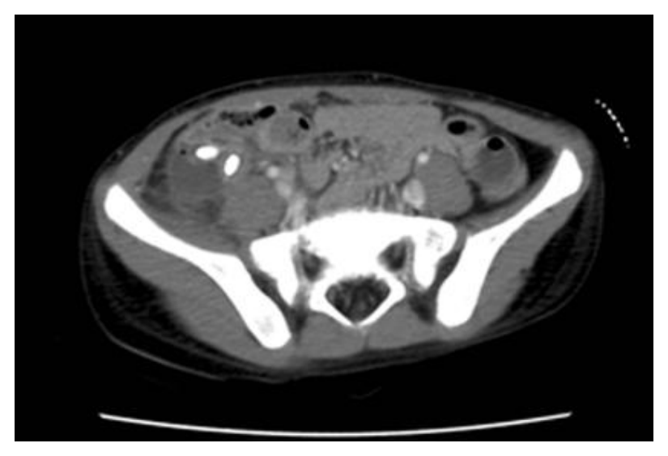
（A） 急性闌尾炎破裂（B） 腎結石（C） 血吸蟲病（D） 膽結石答案：（A）
詳解與考點 正解：影像在病人右下腹（影像左側）盲腸周圍可見局部發炎性軟組織腫塊，內有數個高密度鈣化焦點，並伴周邊脂肪組織模糊，符合闌尾結石阻塞後造成急性闌尾炎，且局部形成膿瘍／發炎腫塊的表現。結合急性腹痛、嘔吐與發燒，最可能是急性闌尾炎破裂，故選 A。
B：腎結石可在泌尿道見高密度結石，並可能造成腎絞痛；但本圖的異常集中於右下腹盲腸旁發炎區，非沿腎臟、輸尿管走行，且發燒與局部發炎腫塊較支持闌尾炎併破裂。
C：血吸蟲病可造成慢性腸道、肝脾或泌尿系統病變與鈣化，但不會典型地以右下腹局部急性發炎腫塊合併闌尾結石樣高密度焦點表現，不能解釋本例急性腹症。
D：膽結石位於膽囊或膽道，解剖位置通常在右上腹；本圖病灶位於骨盆腔層面的右下腹，與膽道位置不符，也無法解釋盲腸旁的局部發炎改變。
本題考點：急性闌尾炎（acute appendicitis）在對比增強電腦斷層可見闌尾周圍脂肪發炎與闌尾結石（appendicolith）；闌尾破裂（perforated appendicitis）常形成局部膿瘍或發炎性腫塊，臨床可有腹痛、嘔吐與發燒。
第 77 題
一位30歲男性，和朋友喝酒吃完海鮮後，突然身上出現如圖病灶，發燙與奇癢無比，下列敘述何者錯誤？
（A） 可能是過敏反應，首要評估有無呼吸道的問題（B） 可給予抗組織胺（antihistamine）注射（C） 可考慮給予口服類固醇（D） H2接受器抑制劑（H2 receptor blocker），如ranitidine是沒有治療效果答案：（D）
詳解與考點 正解：飲酒、海鮮後突發灼熱劇癢，符合急性蕁麻疹（acute urticaria），可能是立即型過敏反應。H2接受器抑制劑如 ranitidine 雖非急性蕁麻疹的首選單獨治療，但與 H1 抗組織胺併用時可作為輔助治療，阻斷部分組織胺作用；故稱其「沒有治療效果」過度絕對，為錯誤敘述，故選 D。
A：急性蕁麻疹可能進展為血管性水腫或全身性過敏反應（anaphylaxis），應先評估（A）呼吸道是否腫脹、呼吸困難、喘鳴及循環不穩，這是正確且優先的處置原則，故非答案。
B：H1 抗組織胺（antihistamine）是蕁麻疹緩解搔癢與膨疹的主要藥物；症狀明顯或無法口服時，可考慮以注射方式給藥，敘述正確，故非答案。
C：嚴重、廣泛或對抗組織胺反應不佳的急性蕁麻疹，可短期考慮口服全身性類固醇（systemic corticosteroid）以抑制發炎反應；但它不是取代呼吸道評估與腎上腺素處置的第一優先，敘述仍屬正確，故非答案。
本題考點：急性蕁麻疹（acute urticaria）的皮膚表現為短暫膨疹與劇癢；全身性過敏反應（anaphylaxis）須優先評估呼吸道與循環；組織胺受體阻斷中，H1 antihistamine 為主要症狀治療，H2 receptor blocker 可作輔助。
第 78 題
顳動脈炎（temporal arteritis）是一種較常發生於女性的血管炎，下列敘述何者最不恰當？
（A） 好發年紀大於50歲（B） 通常為單側（C） 觸診可發現顳動脈炎（temporal arteritis）的脈動增強（D） 常合併肌肉疼痛答案：（C）
詳解與考點 正解：顳動脈炎（temporal arteritis），亦稱巨細胞動脈炎（giant cell arteritis），因血管壁發炎、狹窄與阻塞，觸診常見顳動脈壓痛、增厚或脈動減弱，而非脈動增強。故最不恰當的是 C。
A：巨細胞動脈炎幾乎只見於 50 歲以上成人，好發年紀大於50歲的敘述正確，故非答案。
B：頭痛與顳部不適可呈單側，臨床表現也可不完全對稱；「通常為單側」仍較（C）的脈動增強合理。
D：巨細胞動脈炎常與風濕性多肌痛（polymyalgia rheumatica）相關，可有肩帶或骨盆帶肌肉疼痛與僵硬，敘述正確。
本題考點：巨細胞動脈炎（giant cell arteritis）好發於 50 歲以上；顳動脈檢查可見壓痛、增厚或脈動減弱；風濕性多肌痛（polymyalgia rheumatica）是常見相關疾病。
第 79 題
周太太在懷孕17週時接受羊水穿刺（amniocentesis），檢查結果發現胎兒有唐氏症（Down syndrome），當時家境困苦的周太太仍決定保留胎兒。到23週時，超音波檢查發現羊水過少，胎兒有先天性心臟病「法洛氏四重症（tetralogy of Fallot）」，且兩側腎臟很小。經過2週的家族討論，產婦要求進行墮胎，因為晚期墮胎恐怕引來「殺胎」爭議，婦產科醫師拒絕執行。對此事件的下列評斷，何者最恰當？
（A） 經醫學專家討論同意後，可施行晚期墮胎（B） 可催生自然產下後，不給予奶水而由嬰兒自然死亡（C） 未經法院核可之「殺胎」醫療行為屬犯法（D） 臺灣民法規定胎兒雖未出生，已具備權利能力答案：（A）
詳解與考點 正解：妊娠已約 25 週，且胎兒有唐氏症、法洛氏四重症、羊水過少與雙側小腎等嚴重異常。官方答案為 A；它指出應進行倫理與跨專業審查，但能否施行晚期醫療性終止妊娠，仍取決於是否符合實質醫療適應性與法定程序，不能僅以專家討論同意作為充分條件。
B：催生後刻意不提供基本照護而任嬰兒死亡，並非正當的醫療決策方式；舒適照護或撤除無效治療必須基於個案的最佳利益與妥善決策程序，不能以此敘述取代評估。
C：本題關鍵在嚴重胎兒異常與醫療倫理程序，不是必然須先由法院核可。把複雜的臨床倫理決策簡化為單一司法前置條件，並不恰當。
D：胎兒的權利能力並非一概在出生前完整取得，而是以出生為原則並在特定利益情形受法律保護；此項將其表述為已具備完整權利能力，過度延伸。
本題考點：晚期妊娠終止（late termination of pregnancy）須整合母體自主、胎兒預後與醫療適應性；臨床倫理諮詢（clinical ethics consultation）可協助重大價值衝突的決策；周產期緩和照護（perinatal palliative care）應與刻意不提供基本照護區分。
第 80 題
45歲的張先生在中年失業經濟窘困之際，他的太太以家庭暴力之故訴請離婚成功，最令張先生憤恨的是離婚的太太瓜分了他的房產。這天，他因為失眠到你的門診拿藥，他除了抒發憤怒情緒外，還說要去燒了太太的房子。你判斷張先生採取傷害前妻行動之機會頗高，此時該如何處理？
（A） 努力勸導，並清楚記載病歷（B） 通報社工並採取保護前妻之措施（C） 請張先生簽切結書聲明不會如此行動（D） 給予安眠及抗焦慮藥物答案：（B）
詳解與考點 正解：病人明確說出要燒毀前妻房屋，且醫師判斷他實際採取傷害行動的機會很高；此時已不是單純宣洩憤怒，而是對可辨識第三人的具體暴力威脅。為降低可預見的嚴重傷害，應通報社工並採取保護前妻的措施，故選 B。
A：勸導與完整記載病歷雖是臨床處置的一部分，但不能取代立即的風險管理。此選項看似重視醫療紀錄，卻未處理已具高度危險性的被威脅者。
C：切結書只記錄病人的承諾，不能可靠地消除其對前妻的具體暴力風險，也不能作為不啟動保護措施的理由。
D：安眠或抗焦慮藥物可能緩和失眠與焦慮，但無法單獨處理病人的明確他害意念及即時安全風險。
本題考點：他害風險評估（violence risk assessment）；保護義務（duty to protect）——面對對特定對象、具體且高度可信的傷害威脅，處置重點是降低被害人風險，而非僅處理病人的情緒或失眠。
其他年度
回到醫師醫學（四）（包括小兒科、皮膚科、神經科、精神科等科目及其相關臨床實例與醫學倫理）的年度總覽 ，
或到醫師題庫首頁 看其他科目。
題目與標準答案出自考選部「國家考試試題及測驗式試題答案」開放資料。依中華民國《著作權法》第 9 條第 1 項第 5 款，
依法令舉行之各類考試試題不得為著作權之標的，得自由利用。詳解為 AI 整理的學習輔助，
並非官方標準答案 ；中華民國法規會修訂，引用前請對照現行版本查證。